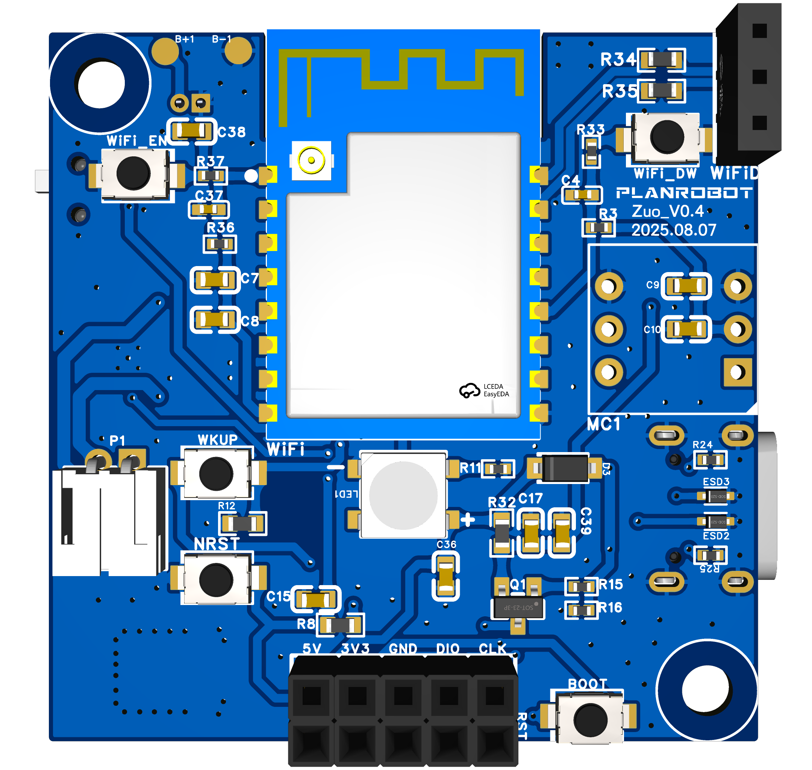
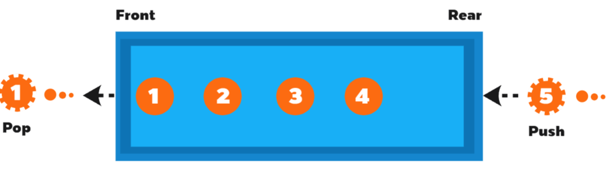
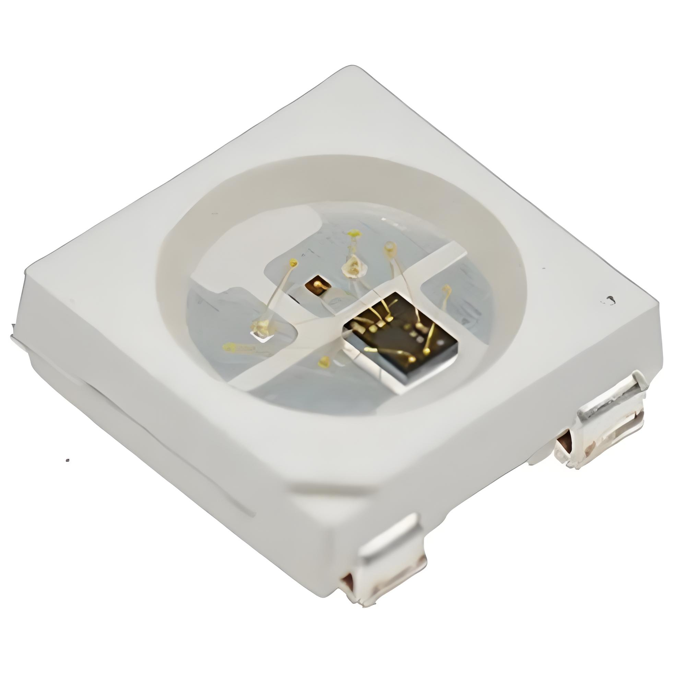
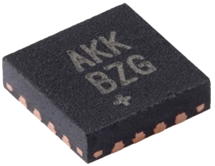
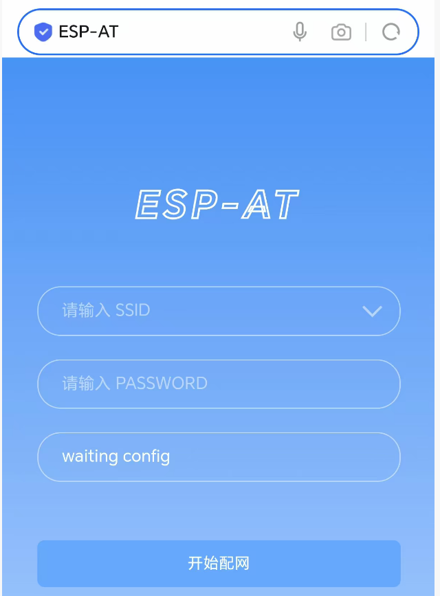

1 AutoAITalk介绍
1.1 项目背景
随着人工智能技术的快速发展，嵌入式语音交互系统在智能家居、AI 玩具、工业控制等领域的应用需求呈现爆发式增长。在这一背景下，以小智 AI 为代表的开源语音对话平台迅速走红。然而，经过对主流开源语音平台的部署实践和技术分析，我们发现这类开源方案存在诸多明显的使用门槛和技术障碍。
首先，在硬件兼容方面，现有方案存在明显的平台局限性。目前主流的开源语音平台主要针对 ESP32系列芯片进行开发，缺乏对 N32 系列、STM32 系列 等基于 ARM Cortex-M 架构的主流 MCU 的支持，严重限制了方案的可移植性。
其次，在开发体验方面，现有方案的学习曲线较为陡峭。其代码复杂，缺乏系统性的开发文档和详细的实现说明，使得大多数新手开发者只能停留在直接烧录预编译固件的使用层面，难以进行深度的二次开发和独立复现。这种情况极大地制约了开发者的学习效率和创新空间。
更为关键的是，在技术实现层面，现有方案存在过度封装的问题。以 ESP-IDF 开发框架为例，其大量使用预编译组件和黑箱式功能模块，开发者虽然可以通过简单配置快速调用各项功能，但却无法深入理解底层原理，这种设计虽然降低了使用门槛，却不利于开发者的技术成长和深度创新。
此外，在系统资源利用方面，现有方案存在内存占用高、资源利用率低等问题，且普遍依赖 FreeRTOS 实时操作系统，带来额外的调度开销，这些问题导致现有方案难以在资源受限的嵌入式场景中稳定运行，限制了其在低成本设备上的应用前景。
针对以上问题，AutoAITalk 应运而生。AutoAITalk 是基于国民技术 N32H482REL7 微控制器开发的嵌入式语音交互平台，提供从硬件设计，到嵌入式开发，再到服务端开发、APP 开发的完整开源技术方案，使开发者既能快速实现功能又能深入理解底层原理。本平台专为智能硬件开发者设计，具备高实时性交互、语音控制其他设备和个性化 AI 角色定制等核心功能，既满足教学研究需求，又能直接应用于商业级产品开发，为 AI 玩具、智能家居等领域提供一个高效、低成本、灵活且易于集成的解决方案。

1.2 功能与特点
- 流式语音对话：采用端到端低延迟流式架构，利用 Opus 音频压缩与 WebSocket 实时传输协议，实现语音采集、传输、响应与播放的近实时交互。
- 智能设备控制中枢：通过提示工程优化与轻量级意图分类模型结合，精准解析用户语音指令，并映射为智能设备或机器人的具体控制动作，实现语音驱动的设备控制中枢功能。
- 个性化定制：支持用户通过移动端 APP 自定义 AI 角色的性格、语气、音色与行为模式，动态生成具有独特个性的虚拟伙伴，实现高度个性化的语音交互体验。
- 支持多语言：支持国语、英语、粤语、日语等多语种语音识别与语音合成，实现真正的跨语言语音交互。
- 扩展性强：支持服务端本地化部署，设备通过 USB Type-C 接口可接入工控机或边缘计算平台，实现从语音采集到指令执行的全链路离线运行，适用于隐私敏感或无网络环境。
- 轻量化：采用轻量化技术架构，内存占用低，方案可在中低端 MCU 上稳定运行，固件大小仅在300kB 以内。
2 开发资源
2.1 嵌入式开发资源
| 类别 | 名称 | 获取方式 | 备注 |
|---|---|---|---|
| 开发工具 | Keil MDK | Keil 官网 | 必备，推荐版本 v5.35 |
| ESP-IDF | 乐鑫官方安装教程 | 必备，用于本地配置、编译并烧录 AT 固件，推荐版本 v5.4 | |
| SSCOM | SSCOM5.12 | 选用，串口调试助手，用于调试设备 | |
| PulseView | PulseView 官网 | 选用，逻辑分析仪，用于调试串口、SPI、PWM 等通信接口 | |
| 组件 | N32H48x_DFP.1.0.0.pack | 国民技术官网 | 芯片支持包 |
| 开发库 | 国民技术官网 | 标准库 | |
| Opus 库 | Opus 官网 | 用于音频压缩，需要自行下载源码移植到 Keil MDK 中 | |
| ST-Link V2 驱动 | ST 中文官网 | 下载 STSW_LINK009 |
2.2 硬件设计资源
| 类别 | 名称 | 备注 |
|---|---|---|
| 主控 MCU | N32H482REL7 | 32 位 ARM Cortex-M4F 内核，主频 240MHz，片内 Flash 容量 512KB |
| 无线通信模块 | ESPC2-12-N4 | 通用型 WIFI 和低功耗蓝牙双模模块 |
| 显示模块 | WS2812B | RGB LED，具备可编程控制特性，支持丰富的色彩变化与动态显示效果 |
| 音频模块 | INMP441 | 音频输入麦克风，基于 MEMS 电容式传感技术，音频信号以 PCM 形式输出 |
| MAX98357AETE+T | 音频输出功放，PCM 输入 D 类功率放大器，可提供 AB 类音频性能，同时具有 D 类的效率 | |
| 喇叭 | 扬声器，连接音频输出功放 | |
| 外部时钟模块 | Crystal | 8MHz 外部晶振 |
| 烧录模块 | SWD | 主要依靠 SWDIO 和 SWCLK 两根核心引脚进行数据传输。并增设有可选引脚 NRST 用于硬件复位，可使芯片恢复到初始状态，方便重新进行烧录或调试操作 |
| 电源模块 | TypeC、锂电池 | 通过电源管理模块、USB-TypeC 供电接口电路、锂电池充电电路、DC-DC 转换电路为整个硬件系统提供稳定、可靠的供电支持 |
2.3 服务端开发资源
| 名称 | 获取方式 | 备注 |
|---|---|---|
| PyCharm | PyCharm 官网 | 社区版即可，或其他Python 编辑器 |
| Dcker Desktop | Docker 官网 | 选择版本 for Windows-AMD64 |
| SakuraFrap 启动器 | SakuraFrap官网 | 用于建立隧道，使设备在不同局域网也能连接上服务器 |
| Ollama | Ollama 官网 | 配置 Dify 的模型来源 |
2.4 APP开发资源
| 名称 | 获取方式 | 备注 |
|---|---|---|
| Android Studio | Android Studio 官网 | Android Studio Koala Feature Drop | 2024.1.2 或更新版本 |
| db 模块 | 官方指南 | API 参考 |
| WIFI 模块 | 官方指南 | API 参考 |
| 蓝牙模块 | 官方指南 | API 参考 |
| MessageAdapter | 官方指南 | API 参考 |
| APP | 下载地址 | 支持的最低版本: Android 8.0 (API 26) |
3 流式语音对话实现过程
系统在设备端通过 I2S 数字音频接口与 INMP441 MEMS 麦克风无缝对接，以确保实时性与高保真的语音信号采集。在软件层面，经过声道数据提取、增益调整等预处理后，利用 OPUS 编码器对 PCM 语音数据进行高效压缩，以优化传输效率。
随后，经由 ESPC2-12-N4 无线通信模组及 WebSocket 协议，系统能够将压缩后的 OPUS 语音数据实时上传至服务端。在服务端，首先运用 VAD 技术识别人类语音活动，再通过 ASR 技术将语音转换为文本。接下来，文本信息被送入大型语言模型进行深度语义理解和响应生成，生成的文本回复通过 TTS 技术转化为语音输出，并再次使用 Opus 编码器进行压缩，然后回传至设备端。
在设备端，接收到的音频数据经解码恢复为 PCM 格式的音流，PCM 音频数据通过 I2S 接口传输至 MAX98357A D 类功放芯片，经功率放大后驱动扬声器输出高质量语音。
系统还配备了一款专门设计的 APP， 该 APP 不仅支持用户实时查看语音交互记录，还提供了便捷的界面以供用户调整模型的各项参数，如音色、对话风格以及人物设定等，以满足个性化定制的需求。

4 嵌入式开发
4.1 Opus 音频编解码技术
4.1.1 Opus 简介
Opus 是一个完全开源且免费的音频编解码器，它融合了 SILK 编解码技术（针对语音编码）和 CELT 编解码技术（针对音乐编码），支持从宽带（8kHz）到全带宽（48kHz）的采样率，能够处理单声道和立体声音频流。因其能够在保持音频高质量的同时实现非常低的编码延迟，十分适用于实时通信场景。
4.1.2 Opus 帧格式
跟据 Opus 帧格式，可以帮助我们通过字符匹配的方式快速从众多的 AT 响应解析出 Opus 数据（具体见4.3.11.2）。
在 Opus 音频编码中，每一个音频包至少需要包含一个字节，这个字节是所谓的目录表头（Table-Of-Contents，简称 TOC）。TOC 字节的作用是告知编码器该音频包使用了哪种编码模式和配置。具体来说，这个字节包含了三个关键信息：① 配置编号，用于指示使用的具体编码设置；② 立体声标志，表示音频声道数；③ 帧计数代码，它告诉编码器在这个包里有多少个音频帧。这三个元素组合在一起，形成了 TOC 字节的结构。
| bit7 | bit6 | bit5 | bit4 | bit3 | bit2 | bit1 | bit0 |
|---|---|---|---|---|---|---|---|
| 配置编号 | 声道数 | 帧计数代码 | |||||
Toc 字节的配置编号位（bit3~bit7）对应 32 种操作模式、音频带宽和帧大小配置的组合，如下表所示。
| 配置编号 | 操作模式 | 音频带宽 | 帧大小 |
|---|---|---|---|
| 0...3 | SILK | 窄带（4kHz） | 10, 20, 40, 60 ms |
| 4...7 | SILK | 中频带（6kHz） | 10, 20, 40, 60 ms |
| 8...11 | SILK | 宽带（8kHz） | 10, 20, 40, 60 ms |
| 12...13 | 混合模式 | 超宽带（12kHz） | 10, 20 ms |
| 14...15 | 混合模式 | 全带（20kHz） | 10, 20 ms |
| 16...19 | CELT | 窄带（4kHz） | 2.5, 5, 10, 20 ms |
| 20...23 | CELT | 超窄带（12kHz） | 2.5, 5, 10, 20 ms |
| 24...27 | CELT | 超宽带（12kHz） | 2.5, 5, 10, 20 ms |
| 28...31 | CELT | 全带（20kHz） | 2.5, 5, 10, 20 ms |
Toc 字节的立体声标志位（bit2）置 0 表示单声道，置 1 表示立体声。
Toc 字节的帧计数代码（bit0~bit1）跟据编码大小将数据包分为四种，如下表所示。
| 帧计数代码 | 数据包 |
|---|---|
| 0 | 单帧包 |
| 1 | 相同压缩数据大小的双帧包 |
| 2 | 不同压缩数据大小的双帧包 |
| 3 | 包含确定帧数的数据包 |
在此，读者只需要对 Opus 帧格式有以上了解即可，关于 Opus 帧格式更加详细的介绍见知乎博主 Fenngtun 的文章《音视频编解码--Opus系列一》。
4.1.3 编解码器的创建与使用方法
本项目使用到的编解码器相关的函数及其说明如下表所示。
| 编/解码 | 函数 | 用途 |
|---|---|---|
| 编码器 |
|
创建和初始化一个 Opus 编码器实例 |
|
对已创建的 Opus 编码器进行控制，如调整复杂度、设置比特率等等 | |
|
将原始 PCM 音频数据编码为 Opus 比特流 | |
| 解码器 |
|
创建和初始化一个 Opus 解码器实例 |
|
将一个 Opus 数据包解码为原始 PCM 音频数据 |
- 在使用
OpusEncoder * opus_encoder_create(opus_int32 Fs, int channels, int application, int *error)创建编码器时，读者可自行跟据主控 MCU 的性能合理选择application项，推荐使用最低延迟模式OPUS_APPLICATION_RESTRICTED_LOWDELAY。经过测试，在 N32H482REL7 上配置编码复杂度为 0、单声道、采样率为 16KHz，帧长度 60ms时，使用OPUS_APPLICATION_VOIP，单帧编码耗时约 60ms，难以满足实时性；切换至OPUS_APPLICATION_RESTRICTED_LOWDELAY后，单帧编码耗时在 10ms 以内，更适合资源受限的嵌入式场景。 - 为了确保实时性，建议使用
int opus_encoder_ctl (OpusEncoder *st, int request,...)将编码复杂度设置为 0。 - 为了对一个帧进行编码，必须正确地使用音频数据的帧（2.5，5，10，20，40 或 60ms）来调用
opus_int32 opus_encode (OpusEncoder *st, const opus_int16 *pcm, int frame_size, unsigned char *data, opus_int32 max_data_bytes)函数（如单声道、16kHz 采样率下，frame_size必须是 40，80，160，320，640 或 960）。
4.2 音频队列
4.2.1 队列简介
队列是一种典型的先进先出的线性数据结构，广泛应用于网络通信、嵌入式系统以及各类实时数据处理场景中。其核心特性是数据的存取顺序严格遵循“先入者先出”的原则：即最早被添加到队列中的数据项，将在后续操作中被最先取出和处理，这与日常生活中的排队机制（如购票队列）高度相似。
在逻辑结构上，队列维护两个关键指针或索引——队头和队尾：所有新的数据元素都从队尾进入，而处理或读取则始终从队头开始。这种单向流动的访问模式有效避免了数据访问的混乱，保证了处理顺序的可预测性和一致性。队列的基本操作通常包括：入队、出队、判断队列是否为空等等。

在本项目中，队列扮演着至关重要的角色，是保障音频播放流畅性和系统稳定性的核心机制。具体而言，主控 MCU 通过 UART7 的空闲中断接收来自 ESPC2-12-N4 模块转发的 Opus 音频帧，由于中断服务程序必须快速响应并退出，复杂且耗时的音频解码和播放操作不能在中断上下文中执行，否则会阻塞其他中断、影响系统实时性，所以为了解决这一矛盾，引入音频队列作为关键的缓冲桥梁，既保证接收数据的可靠性，也保证音频处理和播放的连续性。
4.2.2 音频队列实现
由于本项目的开发环境基于C语言，标准库中并无现成的队列容器可供使用，因此，我们需要手动实现一个适用于音频数据缓存的队列结构。考虑到 Opus 音频帧动态到达、长度不一且处理时机与接收时机异步的特点，这里采用链表结构实现动态队列，以灵活管理 Opus 音频数据包，为每个接收到 Opus 音频帧动态分配内存节点，从而避免依赖固定大小的缓冲区。
4.2.2.1 数据结构设计
音频队列采用单向链表实现，包含以下核心结构：
AudioPacket：封装一个 Opus 音频帧的数据和长度。
typedef struct {
uint8_t data[MAX_DATA_SIZE]; // 存储Opus音频数据
size_t length; // 数据实际长度
} AudioPacket;
QNode：链表节点，包含一个AudioPacket和指向下一个节点的指针。
typedef struct QueueNode {
struct QueueNode* next;
AudioPacket packet;
} QNode;
Queue：队列管理结构体，维护队头、队尾指针和当前元素数量。
typedef struct {
QNode* head; //指向第一个待处理的音频帧（出队位置）
QNode* tail; //指向最后一个已接收的音频帧（入队位置）
int size; //记录当前队列中的帧数，便于快速判断状态
} Queue;
4.2.2.2 初始化队列
初始化队列时，将队列头指针head和尾指针tail指针置位NULL，音频帧数量size置零，表示空队列。
/**
* @brief 初始化队列
* @param pq: 指向待初始化队列的指针
* @note 该函数将队列的头指针、尾指针置空，元素个数清零，表示创建一个空队列。
* 必须在使用队列前调用此函数进行初始化。
*/
void QueueInit(Queue* pq)
{
pq->head = pq->tail = NULL; // 初始状态：队列为空，头尾指针均指向 NULL
pq->size = 0; // 当前元素数量为 0
}
4.2.2.3 入队列
入队列时，首先为待插入的音频数据动态分配一个链表节点，若内存分配失败则报错并返回；若分配成功，则将输入的 Opus 数据内容及其长度复制到该节点的AudioPacket结构中，并将节点的指针域初始化为NULL，随后判断队列是否为空，若为空则将队列的头指针和尾指针均指向该新节点，否则将当前尾节点的next指针指向新节点，并更新尾指针到新节点，最后增加音频帧数量size，完成入队操作。
/**
* @brief 向队列尾部插入一个新的音频数据包（入队操作）
* @param pq: 指向目标队列的指针
* @param data: 指向待入队的音频数据缓冲区（如 Opus 编码数据）
* @param length: 数据的实际长度（字节数）
* @note 本函数会动态分配一个新节点，将 data 中的 length 字节数据复制到节点中。
* 若内存分配失败，会通过 perror 输出错误信息并返回，不进行入队操作。
*/
void QueuePush(Queue* pq, const uint8_t* data, size_t length) {
// 动态分配一个新节点
QNode* newnode = (QNode*)malloc(sizeof(QNode));
if (newnode == NULL) {
perror("malloc fail"); // 分配失败，打印错误信息（实际项目中可替换为日志或错误码）
return;
}
// 将传入的数据拷贝到新节点的 packet 中
memcpy(newnode->packet.data, data, length);
newnode->packet.length = length; // 记录数据长度
newnode->next = NULL; // 新节点的 next 指针初始化为 NULL
// 判断队列是否为空
if (pq->tail == NULL) {
// 队列为空：新节点既是头也是尾
pq->head = pq->tail = newnode;
} else {
// 队列非空：将新节点链接到当前尾节点之后
pq->tail->next = newnode;
pq->tail = newnode; // 更新尾指针指向新节点
}
pq->size++; // 队列元素数量加一
}
4.2.2.4 出队列
入队列时，首先检查队列是否为空，若为空则直接返回以避免无效操作；若队列非空，则临时保存当前头节点，将头指针指向下一个节点，如果此时队列变为空（即新的头指针为NULL），则同时更新尾指针为NULL以保持队列的一致性；接着释放之前保存的原头节点所占用的内存，防止内存泄漏，并减少音频帧数量size，从而完成一次完整的出队操作。
/**
* @brief 从队列头部移除一个音频数据包（出队操作）
* @param q: 指向目标队列的指针
* @note 该函数释放队头节点的内存。调用前应确保队列非空（可通过 QueueEmpty 判断），
* 否则可能导致空指针访问。
*/
void QueuePop(Queue* q) {
if (!q->head) return; // 若队列为空（head 为 NULL），直接返回，避免非法操作
QNode* temp = q->head; // 临时保存当前头节点
q->head = q->head->next; // 将头指针移动到下一个节点
// 如果出队后队列为空，则尾指针也置为 NULL
if (!q->head) {
q->tail = NULL;
}
free(temp); // 释放原头节点的内存
q->size--; // 队列元素数量减一
}
4.2.2.5 获取队列头/尾元素
获取队列头部元素时，直接返回头节点中AudioPacket的指针，相对的，获取队列尾部元素时，直接返回尾节点中AudioPacket的指针。两个操作均不修改队列结构，仅提供数据访问接口，调用前需确保队列非空，否则将导致空指针访问错误。
/**
* @brief 获取队列头部数据包的指针（只读访问）
* @param pq: 指向目标队列的指针
* @return 指向队头 AudioPacket 的指针
* @note 用于访问即将被处理的音频帧数据。调用前必须确保队列非空，
* 否则返回空指针可能导致程序崩溃。
*/
AudioPacket* QueueFront(Queue* pq) {
return &(pq->head->packet); // 返回头节点中 packet 的地址
}
/**
* @brief 获取队列尾部数据包的指针
* @param pq: 指向目标队列的指针
* @return 指向队尾 AudioPacket 的指针
* @note 通常用于调试或监控最新接收到的数据。调用前必须确保队列非空。
*/
AudioPacket* QueueBack(Queue* pq) {
return &(pq->tail->packet); // 返回尾节点中 packet 的地址
}
4.2.2.6 获取队列长度及判断队列是否为空
获取队列长度直接返回队列中当前存储的音频帧数量size，该值由入队和出队操作自动维护，查询时间复杂度为 O(1)。判断队列是否为空通过检查size实现。
/**
* @brief 获取队列中当前有效元素的个数
* @param pq: 指向目标队列的指针
* @return 当前队列中的音频帧数量
*/
int QueueSize(Queue* pq) {
return pq->size; // 直接返回计数器值，时间复杂度 O(1)
}
/**
* @brief 检测队列是否为空
* @param pq: 指向目标队列的指针
* @return 若队列为空，返回非零值（true）；否则返回 0（false）
*/
int QueueEmpty(Queue* pq) {
return pq->size == 0; // 根据元素数量判断
}
4.2.2.7 销毁队列
销毁队列时，从头节点开始遍历整个链表，逐个释放每个节点所占用的内存，直至所有节点均被回收。操作完成后，将头指针和尾指针置为NULL，并清零元素计数，使队列恢复初始未初始化状态。该操作通常在系统关闭或资源释放阶段调用，确保无内存泄漏。
/**
* @brief 销毁队列并释放所有动态分配的内存
* @param pq: 指向待销毁队列的指针
* @note 该函数会遍历整个链表，逐个释放每个节点的内存。
* 调用后队列处于未初始化状态，如需再次使用，必须重新调用 QueueInit。
*/
void QueueDestroy(Queue* pq) {
QNode* cur = pq->head; // 从头节点开始
while (cur) {
QNode* next = cur->next; // 保存下一个节点地址（防止释放后丢失）
free(cur); // 释放当前节点
cur = next; // 移动到下一个节点
}
// 恢复队列初始状态
pq->head = pq->tail = NULL;
pq->size = 0;
}
4.3 无线通信模组（ESPC2-12-N4）驱动实现
4.3.1 WebSocket 简介
WebSocket 是一种全双工、长连接的网络通信协议，旨在实现客户端与服务器之间高效、实时的数据交互。WebSocket 建立连接时，先通过一次标准 HTTP 请求完成协议升级握手，随后将连接从 HTTP 切换为 WebSocket 协议，之后通信不再受“请求-响应”限制。一旦连接建立，客户端和服务器可以随时、独立地向对方发送数据，就像打通了一条双向通行的“数据隧道”。
4.3.2 AT 指令简介
AT 指令集是一种用于控制调制解码器和通信模块的标准化命令语言，因其以AT开头而得名。AT 指令通过简单的文本命令，让用户能够配置、控制和监控通信模块（如 4G、5G、WIFI、蓝牙等）的运行。
AT 指令通过串行接口（如 UART、USB）以明文文本形式发送，模块接受到指令后执行相应操作，并返回结果（如 OK、ERROR 或具体数据）。整个过程无需复杂协议栈，非常适合嵌入式系统和资源受限的设备使用。项目主要涉及的 AT 指令及其作用、响应如下表所示.
| AT 指令 | 作用 | 响应（成功） | 响应（失败） |
|---|---|---|---|
|
测试 AT 启动 |
|
|
|
关闭 BluFi |
|
|
|
开启 BluFi |
|
|
|
设置 BluFi 设备名字 |
|
|
|
查询设备 WIFI 状态 |
|
|
|
查询 WebSocket 连接 |
|
|
|
配置 WebSocket 参数 |
|
|
|
发送 WebSocket 连接请求 |
|
|
|
向 WebSocket 连接发送数据 |
|
|
- AT 指令及其响应均以
\r\n结尾 - 上表中连接类的 AT 指令（如
AT+WSOPEN?），默认发送成功得到的是“有连接”响应，若是“无连接”，则响应仅有OK），关于 AT 指令更加详细的介绍见乐鑫官网文档《AT 命令集》。
4.3.3 本地配置 AT 固件
由 4.3.1 可知，主控 MCU 依赖于串口传输 AT 指令与无线通信模组（ESPC2-12-N4）建立连接，需要注意的是，原厂的 ESPC2-12-N4 并未烧录 AT 固件，并且默认的 AT 固件不支持当前的项目需求，需要自行配置 AT 固件并烧录到模组上。
所以本小节将着重介绍对默认的 AT 固件（ESP32C2-4MB）进行哪些修改，详细的本地编译 ESP-AT工程参考乐鑫官方文档《ESP-AT 用户指南》。
4.3.3.1 修改命令端口 UART1 波特率
由于 AT 响应十分频繁，命令端口波特率设置过高，而主控 MCU 处理能力有限，可能会导致串口上溢错误发生而造成数据丢失；命令端口波特率设置过低，又会导致数据传输不及时，不满足语音对话的实时性要求，故命令端口波特率应选取一个合适值，经过测试，在此推荐选用 43000bps（AT 固件默认波特率为 115200bps）。
修改方法如下：
(1) 打开 ESP-AT 工程目录。
(2) 导航到 components/customized_partitions/raw_data/factory_param/ 目录下。
(3) 在 factory_param_data.csv 文件中，找到 ESP32C2-4MB 对应的配置行。
(4) 修改 uart_baudrate 列的值以适应新的波特率需求。
(5) 保存文件。
需要注意的是，在本项目中，音频流的设定为单声道、采样率 16kHz、帧长度 60ms、编码复杂度 0、低延迟编码模式，每帧 Opus 音频的长度为 125，大小为 125×8bit。为了满足实时采集的要求，串口波特率需满足下式。
其中， 表示每帧Opus音频数据量、 表示串口波特率、 表示编码耗时、 表示其他开销。
由上式可知，为了满足实时性要求，命令端口波特率需大于 20400bps，读者在对波特率进行修改的时候，注意不要低于这个值。
4.3.3.2 开启 Web 服务器 AT 命令支持
当前项目设定的配网方式分为 SoftAP 配网和 BluFi 配网两种。SoftAP 配网即 WEB 配网，而默认的 AT 固件并没有开启 Web 服务器的 AT 命令支持，修改方法如下：
(1) 打开 ESP-IDF CMD，通过命令行python build.py menuconfig打开工程配置主窗口
(2) 导航到 Component config/AT/ 目录下。
(3) 启用 AT Web Server command support。
(4) 保存文件。
4.3.3.3 开启 WebSocket AT 命令支持
默认的 AT 固件没有开启 WebSocket 的 AT 命令支持，修改方法如下：
(1) 打开 ESP-IDF CMD，通过命令行python build.py menuconfig打开工程配置主窗口
(2) 导航到 Component config/AT/ 目录下。
(3) 启用 AT WebSocket command support。
(4) 保存文件。
4.3.4 ESPC2-12-N4 硬件连接
主要的引脚连接如下表所示，读者可跟据需求自行配置 ESPC2-12-N4 上表格外的其他引脚。另外，若通过 GPIO 交换矩阵改变了 ESPC2-12-N4 上默认的引脚配置，请确保您已正确设置这些自定义的引脚映射并连接到正确的主控 MCU 引脚上。
| ESPC2-12-N4 引脚 | MCU 引脚 | 备注 |
|---|---|---|
| IO7（UART1 TX） | PB10（UART7 RX） | 注意：默认的 AT 固件 AT 命令端口为 UART1 |
| IO6（UART1 RX） | PB11（UART7 TX） | 注意：默认的 AT 固件 AT 命令端口为 UART1 |
| EN（使能引脚） | 默认 3V3 上拉 | 建议预留下拉按钮（方便重新烧录 AT 固件） |
| IO9 | 默认 3V3 上拉 | 建议预留下拉按钮（方便重新烧录 AT 固件） |
| TXD0 | 无连接 | 建议预留端口（方便重新烧录 AT 固件） |
| RXD0 | 无连接 | 建议预留端口（方便重新烧录 AT 固件） |
| VCC | VDD | 3V3 |
| GND | GND | 共地 |
4.3.5 RCC 时钟使能
在使用 UART7 及其相关外设之前，必须首先开启其对应的时钟源。嵌入式微控制器中的外设默认处于关闭状态以节省功耗，只有在被显式启用时钟后才能正常工作。对于 UART7 的完整功能支持，需要依次使能 UART7 的 TX 和 RX 时钟、引脚复用功能时钟、UART7 时钟、DMA2 模块时钟。
/**
* @brief UART7 时钟初始化函数
* @note 启用 UART7 模块及其相关外设（GPIO、AFIO、DMA）的时钟
* 为后续配置引脚、串口和 DMA 提供时钟支持
* @param 无
* @retval 无
*/
void UART7_RCC_INIT(void)
{
// 启用 UART7 的 TX 和 RX 引脚所在 GPIO 端口的 AHB1 总线时钟
RCC_EnableAHB1PeriphClk(UART7_TX_CLOCK | UART7_RX_CLOCK, ENABLE);
// 使能复用功能 I/O (AFIO) 的 APB2 总线时钟，用于配置引脚的复用功能（如 UART 功能）
RCC_EnableAPB2PeriphClk(RCC_APB2_PERIPH_AFIO, ENABLE);
// 使能 UART7 模块自身的 APB2 总线时钟，允许访问其寄存器
RCC_EnableAPB2PeriphClk(RCC_APB2_PERIPH_UART7, ENABLE);
// 使能 DMA2 模块的 AHB 总线时钟，为后续使用 DMA 接收数据做准备
RCC_EnableAHBPeriphClk(RCC_AHB_PERIPHEN_DMA2, ENABLE);
}
4.3.6 GPIO 初始化
UART7 的通信依赖于两个关键引脚：发送端（TX，PB11）和接收端（RX，PB10）。在使用前，必须将这两个引脚配置为正确的 GPIO 模式，并映射到 UART7 外设功能。根据功能需求，其初始化配置如下表所示。
| 引脚 | GPIO 模式 | 引脚复用类型 | 引脚转换速率 | 内部电阻配置 | 其他 |
|---|---|---|---|---|---|
| PB11 | 复用推挽 | UART7_TX | 快速模式 | 上拉 | 默认 |
| PB10 | 复用推挽 | UART7_RX | 快速模式 | 上拉 | 默认 |
对应的初始化程序如下所示。
/**
* @brief UART7 GPIO 引脚初始化函数
* @note 配置 UART7 的发送（TX）和接收（RX）引脚为复用推挽模式
* 并设置上拉、快速切换速率等参数
* @param 无
* @retval 无
*/
void UART7_GPIO_INIT(void)
{
GPIO_InitType GPIO_InitStruct;
// 配置 UART7 TX 引脚
GPIO_InitStruct.Pin = UART7_TX_PIN; // 指定 TX 引脚编号
GPIO_InitStruct.GPIO_Mode = GPIO_MODE_AF_PP; // 设置为复用推挽输出模式
GPIO_InitStruct.GPIO_Alternate = GPIO_AF_UART7_TX_PB11; // 映射到 UART7 的 TX 功能
GPIO_InitStruct.GPIO_Pull = GPIO_PULL_UP; // 启用上拉电阻，提高信号稳定性
GPIO_InitStruct.GPIO_Slew_Rate = GPIO_SLEW_RATE_FAST; // 设置引脚切换速率为“快速”
GPIO_InitPeripheral(UART7_TX_PORT, &GPIO_InitStruct); // 应用配置到指定端口
// 配置 UART7 RX 引脚
GPIO_InitStruct.Pin = UART7_RX_PIN; // 指定 RX 引脚编号
GPIO_InitStruct.GPIO_Mode = GPIO_MODE_AF_PP; // 同样为复用推挽模式（输入由硬件自动管理）
GPIO_InitStruct.GPIO_Alternate = GPIO_AF_UART7_RX_PB10; // 映射到 UART7 的 RX 功能
GPIO_InitStruct.GPIO_Pull = GPIO_PULL_UP; // 启用上拉，增强抗干扰能力
GPIO_InitStruct.GPIO_Slew_Rate = GPIO_SLEW_RATE_FAST; // 快速切换速率
GPIO_InitPeripheral(UART7_RX_PORT, &GPIO_InitStruct); // 应用配置到 RX 端口
}
4.3.7 UART7 初始化
在完成时钟和 GPIO 配置后，需对 UART7 外设本身进行功能参数初始化，以确保其工作在预期的通信模式下。初始化主要包括波特率、数据格式、通信方向等关键参数，具体配置如下表所示。
| 串口 | 波特率 | 数据长度 | 停止位 | 校验位 | 串口模式 | 硬件流控制 | 过采样率 |
|---|---|---|---|---|---|---|---|
| UART7 | 43000bps | 8 | 1 | 无 | TX||RX | 禁用 | 16倍 |
此外，还需要启用 DMA 请求用于接收数据，配置并启用空闲中断（采用空闲中断的具体原因见 4.3.11），最后使能 UART7 即可，程序如下所示。
/**
* @brief UART7 串口模块初始化函数
* @note 配置 UART7 的基本通信参数，包括波特率、数据位、停止位、校验方式等
* 并启用接收/发送功能、DMA 接收请求和空闲中断
* @param 无
* @retval 无
*/
void UART7_INIT(void)
{
USART_InitType USART_InitStructure;
USART_StructInit(&USART_InitStructure); // 使用默认值填充结构体，确保未设置字段安全
// 配置串口通信参数
USART_InitStructure.BaudRate = 43000; // 设置波特率为 43000 bps
USART_InitStructure.WordLength = USART_WL_8B; // 数据位长度：8 位
USART_InitStructure.StopBits = USART_STPB_1; // 停止位：1 位
USART_InitStructure.Parity = USART_PE_NO; // 无奇偶校验
USART_InitStructure.HardwareFlowControl = USART_HFCTRL_NONE;// 不使用硬件流控（RTS/CTS）
USART_InitStructure.OverSampling = USART_16OVER; // 采用 16 倍过采样以提高稳定性
USART_InitStructure.Mode = USART_MODE_RX | USART_MODE_TX; // 启用接收和发送双工模式
// 将配置应用到 UART7 外设
USART_Init(UART7, &USART_InitStructure);
// 启用 UART7 的 DMA 接收请求，实现数据自动搬运到内存
USART_EnableDMA(UART7, USART_DMAREQ_RX, ENABLE);
// 使能空闲线检测中断（IDLE Interrupt），用于判断一帧数据接收完成
USART_ConfigInt(UART7, USART_INT_IDLEF, ENABLE);
// 最后使能 UART7 模块，开始工作
USART_Enable(UART7, ENABLE);
}
4.3.8 DMA 初始化
为了提高串口数据接收效率，这里采用 DMA 接收，DMA 能在不干预 CPU 的情况下，将接收到的数据自动从 UART 数据寄存器搬运到指定内存缓冲区。将 UART7 RX 请求映射到 DMA2_CH6 上， 其主要的初始化配置如下表所示。
| 外设地址 | 数据传输方向 | 外设地址 | 外设数据宽度 | 内存数据宽度 | DMA 模式 |
|---|---|---|---|---|---|
| UART7->DAT | 从外设到内存 | 固定 | 字节 | 字节 | 正常模式 |
为了便于后续使用双缓冲 DMA，内存地址和缓冲区大小作为传参由函数为外部输入。此外，还需要通过DMA_RequestRemap方法将 UART7 RX 请求映射到 DMA2_CH6，并且启用 DMA2_CH6，程序如下。
/**
* @brief UART7 DMA 接收通道配置函数
* @note 配置 DMA 通道用于从 UART7 数据寄存器自动搬运接收到的数据到指定缓冲区
* 支持通过空闲中断 + DMA 实现“不定长数据接收”
* @param buffer - [in] 用户提供的数据接收缓冲区首地址
* @param BUFFER_SIZE - [in] 缓冲区总大小（字节）
* @retval 无
*/
void UART7_DMA_Configuration(uint8_t *buffer, int BUFFER_SIZE)
{
DMA_InitType DMA_InitStructure;
// 复位并禁用指定的 DMA 通道，确保初始状态干净
DMA_DeInit(UART7_RX_DMA_CH);
// 使用默认值初始化 DMA 配置结构体
DMA_StructInit(&DMA_InitStructure);
// 配置 DMA 传输参数
DMA_InitStructure.PeriphAddr = (uint32_t)&UART7->DAT; // 外设地址：UART7 数据寄存器
DMA_InitStructure.MemAddr = (uint32_t)buffer; // 内存地址：用户缓冲区
DMA_InitStructure.Direction = DMA_DIR_PERIPH_SRC; // 传输方向：外设为源（读取数据）
DMA_InitStructure.BufSize = BUFFER_SIZE; // 传输数据总量（字节）
DMA_InitStructure.PeriphInc = DMA_PERIPH_INC_DISABLE; // 外设地址不自增（始终读 DAT 寄存器）
DMA_InitStructure.MemoryInc = DMA_MEM_INC_ENABLE; // 内存地址自增，依次存入缓冲区
DMA_InitStructure.PeriphDataSize = DMA_PERIPH_DATA_WIDTH_BYTE; // 外设数据宽度：字节
DMA_InitStructure.MemDataSize = DMA_MEM_DATA_WIDTH_BYTE; // 内存数据宽度：字节
DMA_InitStructure.CircularMode = DMA_MODE_NORMAL; // 正常模式（非循环），适合一帧接收
DMA_InitStructure.Priority = DMA_PRIORITY_VERY_HIGH; // 设置为最高优先级，避免丢数据
DMA_InitStructure.Mem2Mem = DMA_M2M_DISABLE; // 禁用内存到内存传输
// 初始化 DMA 通道，应用上述配置
DMA_Init(UART7_RX_DMA_CH, &DMA_InitStructure);
// 重新映射 DMA 请求通道，确保 UART7_RX 正确连接到指定 DMA 通道
DMA_RequestRemap(DMA_REMAP_UART7_RX, UART7_RX_DMA_CH, ENABLE);
// 启用 DMA 通道，开始监听 UART7 的数据接收请求
DMA_EnableChannel(UART7_RX_DMA_CH, ENABLE);
}
4.3.9 NVIC 初始化
串口 UART7 对应的中断通道为 UART7_IRQn，初始化配置如下表所示。
| 中断通道 | 优先级分组 | 抢占优先级 | 子优先级 | 中断使能 |
|---|---|---|---|---|
| UART7_IRQn | Group2 | 1 | 1 | 使能 |
程序如下所示。
/**
* @brief UART7 NVIC 中断优先级配置函数
* @note 配置 UART7 中断的抢占优先级和子优先级
* 用于处理空闲中断（IDLE）等事件
* @param 无
* @retval 无
*/
void UART7_NVIC_Configuration(void)
{
NVIC_InitType NVIC_InitStructure;
// 设置中断优先级分组为 Group 2：2 位抢占优先级，2 位子优先级
NVIC_PriorityGroupConfig(NVIC_PriorityGroup_2);
// 配置 UART7 中断通道
NVIC_InitStructure.NVIC_IRQChannel = UART7_IRQn; // 指定中断源为 UART7
NVIC_InitStructure.NVIC_IRQChannelPreemptionPriority = 1; // 抢占优先级设为 1
NVIC_InitStructure.NVIC_IRQChannelSubPriority = 1; // 子优先级设为 1
NVIC_InitStructure.NVIC_IRQChannelCmd = ENABLE; // 使能该中断通道
// 应用配置到 NVIC（嵌套向量中断控制器）
NVIC_Init(&NVIC_InitStructure);
}
4.3.10 ESPC2-12-N4 功能初始化
在完成外设的底层配置后，需通过发送 AT 指令对 ESPC2-12-N4 模组进行功能初始化，确保其成功连接 Wi-Fi 并建立 WebSocket 通信链路。本节以 BluFi 配网方式 为例说明初始化流程（SoftAP 配网仅 AT 指令不同，具体可参考乐鑫官方文档《Web Server AT 示例》）。
主控 MCU 通过标准库函数USART_SendData向 ESPC2-12-N4 发送 AT 指令（格式为指令\r\n），并通过 UART7 的 IDLE 中断机制（详见 4.3.11）接收响应并解析。ESPC2-12-N4 初始化过程如下.
(1) 发送AT\r\n测试 AT 是否启动，等待响应OK。
(2) 发送AT+BLUFI=0\r\n关闭 BluFi 功能，等待响应OK。
(3) 发送AT+BLUFINAME=\"AI BOT BLUFI\"\r\n设置 BluFi 设备名字为“AI BOT BLUFI”（在AT+BLUFI=0时才生效），等待响应OK。
(4) 发送AT+BLUFI=1\r\n开启 BluFi 功能，等待响应OK。
(5) 通过我们的 APP 或者其他 BluFi 配网工具进行配网，主控通过轮询的方式向模组发送AT+CWSTATE?\r\n查询 WIFI 连接状态，模组响应+CWSTATE:2,<ssid>即配网成功，随后发送AT+BLUFI=0\r\n关闭 BluFi 功能，以释放资源。
(6) 主控发送AT+WSOPEN?\r\n查询 WebSocket 连接状态，若响应中带有+WS_CONNECTED即已成功连接 WebSocket 服务端，初始化成功；反之，发送"AT+WSCFG=0,30,600,4096\r\n"设定 WebSocket 配置连接 ID 为 0、Ping 间隙 30s、Ping 超时时间 600s、缓冲区大小 4096（读者可跟据自身需求设定参数，建议缓冲区尽量大），等待响应OK。最后发送AT+WSOPEN=<link_id>,<"uri">发起连接请求，等待响应+WS_CONNECTED。
/**
* @brief AT指令系统初始化函数
* @note 该函数完成ESP32等模块的AT模式初始化，包括：
* 1. 基础AT通信测试
* 2. 使用BluFi进行Wi-Fi配网
* 3. 查询Wi-Fi连接状态
* 4. 配置并建立与服务器的WebSocket连接
* @param 无
* @retval 无
*/
void AT_INIT(void)
{
// 设置初始化开始标志
AT_INIT_FLAG = true;
// 更改设备状态为“初始化中”
ChangeDeviceState(0);
// ==================== 1. 测试基础AT通信 ====================
AT_OK_FLAG = false; // 清除AT响应成功标志
UART7_SendATCommand("AT\r\n"); // 发送最基础的AT指令测试模块是否在线
// 循环等待模块返回"OK"，超时重发，最多每500ms重试一次
while (!AT_OK_FLAG)
{
systick_delay_ms(500);
if (AT_OK_FLAG) { break; } // 如果收到OK，跳出循环
UART7_SendATCommand("AT\r\n"); // 否则重新发送AT指令
}
// ==================== 2. 配置BluFi进行Wi-Fi配网 ====================
// 先关闭BluFi（确保干净状态）
AT_OK_FLAG = false;
UART7_SendATCommand("AT+BLUFI=0\r\n");
while (!AT_OK_FLAG)
{
systick_delay_ms(500);
if (AT_OK_FLAG) { break; }
UART7_SendATCommand("AT+BLUFI=0\r\n");
}
// 设置BluFi设备名称，便于手机端识别（如“AI BOT BLUFI”）
AT_OK_FLAG = false;
UART7_SendATCommand("AT+BLUFINAME=\"AI BOT BLUFI\"\r\n");
while (!AT_OK_FLAG)
{
systick_delay_ms(500);
if (AT_OK_FLAG) { break; }
UART7_SendATCommand("AT+BLUFINAME=\"AI BOT BLUFI\"\r\n");
}
// 开启BluFi功能，启动配网热点
AT_OK_FLAG = false;
UART7_SendATCommand("AT+BLUFI=1\r\n");
while (!AT_OK_FLAG)
{
systick_delay_ms(500);
if (AT_OK_FLAG) { break; }
UART7_SendATCommand("AT+BLUFI=1\r\n");
}
// ==================== 3. 等待Wi-Fi连接成功 ====================
// 查询当前Wi-Fi连接状态
AT_CWSTATE_FLAG = false; // 清除Wi-Fi状态响应标志
UART7_SendATCommand("AT+CWSTATE?\r\n");
while (!AT_CWSTATE_FLAG) // 等待模块返回Wi-Fi已连接（状态为3）
{
systick_delay_ms(500);
if (AT_CWSTATE_FLAG) { break; }
UART7_SendATCommand("AT+CWSTATE?\r\n");
}
// Wi-Fi连接成功后，关闭BluFi以节省资源或防止干扰
AT_OK_FLAG = false;
UART7_SendATCommand("AT+BLUFI=0\r\n");
while (!AT_OK_FLAG)
{
systick_delay_ms(500);
if (AT_OK_FLAG) { break; }
UART7_SendATCommand("AT+BLUFI=0\r\n");
}
// ==================== 4. 建立WebSocket连接 ====================
// 先查询是否已有WebSocket连接
AT_OK_FLAG = false;
AT_WSOPENE_FLAG = false; // WebSocket是否已打开的标志
UART7_SendATCommand("AT+WSOPEN?\r\n");
while (!AT_OK_FLAG)
{
systick_delay_ms(500);
if (AT_OK_FLAG) { break; }
UART7_SendATCommand("AT+WSOPEN?\r\n");
}
// 如果尚未建立WebSocket连接，则进行配置并连接
if (!AT_WSOPENE_FLAG)
{
// 配置WebSocket连接参数：连接ID=0，Ping间隔=30s，超时=600s，缓冲区=4096字节
AT_OK_FLAG = false;
UART7_SendATCommand("AT+WSCFG=0,30,600,4096\r\n");
while (!AT_OK_FLAG)
{
systick_delay_ms(500);
if (AT_OK_FLAG) { break; }
UART7_SendATCommand("AT+WSCFG=0,30,600,4096\r\n");
}
// 延迟500ms确保配置生效
systick_delay_ms(500);
// 发送WebSocket连接指令，连接到指定服务器（当前使用IP: 8.148.191.21）
// 注意：URL中"//"可能是冗余的，应根据服务器要求确认
AT_WSCONNECTEDE_FLAG = false; // 清除连接成功标志
UART7_SendATCommand("AT+WSOPEN=0,\"ws://8.148.191.21:23530//\"\r\n");
// 循环等待模块返回"+WS_CONNECTED"，表示WebSocket连接成功
while (!AT_WSCONNECTEDE_FLAG)
{
systick_delay_ms(500);
if (AT_WSCONNECTEDE_FLAG) { break; }
UART7_SendATCommand("AT+WSOPEN=0,\"ws://8.148.191.21:23530//\"\r\n");
}
}
// ==================== 初始化完成 ====================
// 清除初始化标志
AT_INIT_FLAG = false;
// 更改设备状态为“初始化完成”
ChangeDeviceState(1);
// 延时1秒，确保状态稳定
systick_delay_ms(1000);
}
4.3.11 双缓冲 DMA 接收+空闲中断
对于本项目而言，如果采用 DMA 接收+接收中断的方式接收 ESPC2-12-N4 发送过来的数据，将会因为 AT 响应十分频繁而反复触发接收中断，浪费 CPU 资源。同时，AT 响应的不定长的，进而我们想到空闲中断的接收方式。
但是，如果仅采用 DMA 接收+空闲中断，若在中断处理结束前下一帧数据到来，就会造成数据丢失。所以，在此采用双缓冲 DMA 接收+空闲中断的方式，以提高 CPU 效率，并且保障接收数据的高效和完整，其工作原理如下：
(1) 双缓冲机制：使用两个缓冲区进行数据接收，当一个缓冲区正在被 DMA 填充时，另一个缓冲区可以被 CPU 读取和处理，当 DMA 填充时，对缓冲区进行切换。
(2) UART 接收器检测到一段时间内（通常是一帧时间）没有新的数据到达时会触发空闲中断，这种机制用于判断一条完整的消息或数据包的结束，从而确定何时切换缓冲区或处理接收到的数据，在处理如AT响应等不定长数据时更加灵活和可靠。
4.3.11.1 字符匹配识别 AT 响应
对于不同的 AT 指令，往往具有不同的 AT 响应（如 4.3.2 所示），在本项目中，主要通过函数strstr以字符匹配的方式确定 AT 指令是否成功执行（如响应OK、+WS_CONNECTED等等），以及处理 WebSocket 返回的 JSON 消息或 Opus 音频（以+WS_DATA开头）。
| 事件 | 匹配模板 | 说明 |
|---|---|---|
| 执行成功 | OK |
- |
| 执行失败 | ERROR |
- |
| 已存在 WebSocket 连接 | OPEN: |
提取自+WSOPEN:<link_id>,<state>,<uri> |
| WebSocket 连接成功 | CONNECTED: |
提取自+WS_CONNECTED:<link_id> |
| 准备就绪，等待接收数据 | > |
提取自OK\r\n>\r\n |
| 对话开启/结束通知 | tts |
读者可以跟据服务端的不同设定进行修改，在本项目中，对话开始或结束，服务端都会发送一条带有tts的 JSON 消息 |
| Opus 数据帧首字节 | ,X |
详细解释见 4.3.11.2 |
- 读者可以自行跟据 AT 响应的特性选择字符匹配模板，但必须保证选择的模板仅在一种 AT 响应中出现。
4.3.11.2 接收 Opus 音频
TTS 生成的语音输出为 PCM 编码格式，在服务端经 Opus 编码后，通过 WebSocket 协议发送至 ESPC2-12-N4 模块，再通过 UART7 接口传输给主控MCU。在接收过程中，需从 AT 响应中解析出每一帧的Opus音频数据。
在此，仍然通过字符匹配的方式提取 Opus 音频数据。在本项目中，音频流的设定为单声道、采样率 16kHz、帧长度 60ms、编码复杂度 0、低延迟编码模式、操作模式为 SILK，所以服务端返回的 Opus 音频帧 Toc 字节恒为0x58(具体原因见 4.1.2，不同的配置对应不同的 Toc 字节，读者可根据实际配置进行调整)，其对应的 ASCII 字符为X。
并且，WebSocket 服务端发送的 Opus 数据在 AT 响应的格式固定为+WS_DATA:<link_id>,<data_len>,<data>（例如+WS_DATA:0,20,X...），所以，对于串口 UART7 而言，接收 Opus 数据的关键在于识别这一特定格式，并通过字符匹配的方式提取出以X开头的原始 Opus 编码数据（在此采用的字符匹配模板是,X，其中前导逗号','的引号是为了确保匹配的唯一性——经过测试验证，该组合仅在包含 Opus 音频数据的 AT 响应中出现，不会与其他响应或数据内容冲突。读者可根据实际应用场景调整该模板）。
在UART7_IRQHandler中断服务程序中，首先判断是否为 IDLE 中断。若处于 AT 指令初始化阶段（AT_INIT_FLAG为真），则在缓冲区中查找OK、STATE:2、OPEN:、 CONNECTED等关键字符串，用于判断 AT 指令执行状态。若非 AT 指令初始化阶段，则进入 Opus 音频数据处理流程。具体的处理流程如下：
(1) 缓冲区切换与数据长度计算：首先记录上一个活动缓冲区（LastActiveBuf），然后切换至另一个缓冲区（ActiveBuf）继续 DMA 接收。通过DMA_GetCurrDataCounter获取DMA传输剩余计数值，计算出本次 IDLE 中断前实际接收到的数据长度pcut。
(2) Opus数据触发检测：检查上一个缓冲区中是否包含tts字符串。若存在，则翻转RECEIVING_OPUS_FLAG标志位，表示即将开始或结束接收 Opus 音频流。
(3) Opus数据解析：当RECEIVING_OPUS_FLAG为真，且在缓冲区中检测到字符匹配模板,X时，即判定为 Opus 数据帧的起始位置。
(4) 数据长度提取：从,X位置向前查找，定位到前一个逗号，提取两个逗号之前的字符串（即<data_len>）。该字符串代表后续 Opus 数据的字节数，将其转换为整数length_opus。
(5) Opus数据提取与入队：从 Toc 字节X开始，连续复制length_opus个字节到WS_OPUS_Buffer缓冲区。随后，调用QueuePush(&audio_queue, WS_OPUS_Buffer, WsOpusBufCnt)将这一帧 Opus 数据压入音频队列，等待后续的编码和播放任务处理。
(6) 资源清理：清空临时变量，并将已处理完毕的缓冲区RxBuf[LastActiveBuf]清零，为下次接收做好准备。
最终，给出 UART7 中断服务函数UART7_IRQHandler的程序如下所示。
/**
* @brief UART7 中断服务函数（ISR）
* 用于处理通过 UART7 接收到的数据，支持 AT 指令响应解析和 Opus 音频数据接收。
* 使用 DMA 双缓冲机制 + 空闲中断（IDLE interrupt）实现高效串口接收。
*/
void UART7_IRQHandler(void)
{
// 检查是否触发了空闲线检测中断（IDLEF）
if (USART_GetIntStatus(UART7, USART_INT_IDLEF) != RESET)
{
// 步骤1：暂停 DMA 通道，防止在处理数据时继续写入
DMA_EnableChannel(DMA2_CH6, DISABLE);
// 读取 UART7 数据寄存器，清除 IDLE 标志（必须操作）
USART_ReceiveData(UART7);
// 根据当前是否处于 AT 初始化流程，执行不同逻辑
if (AT_INIT_FLAG)
{
// 在 AT 初始化阶段，解析关键响应字符串
if (!AT_OK_FLAG) {
AT_OK_FLAG = (strstr((char*)RxBuf[ActiveBuf], "OK") != NULL); // 检测 "OK"
}
if (!AT_CWSTATE_FLAG) {
AT_CWSTATE_FLAG = (strstr((char*)RxBuf[ActiveBuf], "STATE:2") != NULL); // 检测连接状态
}
if (!AT_WSOPENE_FLAG) {
AT_WSOPENE_FLAG = (strstr((char*)RxBuf[ActiveBuf], "OPEN:") != NULL); // 检测 WebSocket 打开
}
if (!AT_WSCONNECTEDE_FLAG) {
AT_WSCONNECTEDE_FLAG = (strstr((char*)RxBuf[ActiveBuf], "CONNECTED") != NULL); // 检测已连接
}
// 清空当前缓冲区，准备下一次接收
memset(RxBuf[ActiveBuf], 0, sizeof(RxBuf[ActiveBuf]));
// 重置 DMA 计数器为缓冲区大小（1512字节），并重新启用 DMA
DMA_SetCurrDataCounter(DMA2_CH6, 1512);
DMA_EnableChannel(DMA2_CH6, ENABLE);
}
else
{
// 非 AT 初始化阶段：处理 WebSocket 数据或 Opus 音频流
// 切换活动缓冲区：双缓冲机制
LastActiveBuf = ActiveBuf;
ActiveBuf = (ActiveBuf == 0) ? 1 : 0;
// 计算本次接收到的数据长度（总大小 - 剩余计数）
int pcut = 1512 - DMA_GetCurrDataCounter(DMA2_CH6);
// 重新配置 DMA，指向新的缓冲区（RxBuf[ActiveBuf]）
UART7_DMA_Configuration(RxBuf[ActiveBuf], RX_BUFFER_SIZE);
DMA_SetCurrDataCounter(DMA2_CH6, 1512);
DMA_EnableChannel(DMA2_CH6, ENABLE);
// 解析上一个缓冲区（LastActiveBuf）中的内容
// 检测是否收到 '>'，表示可以发送数据
if (!AT_WSSEND_FLAG) {
AT_WSSEND_FLAG = (strstr((char*)RxBuf[LastActiveBuf], ">") != NULL);
}
// 检测是否收到 "ERROR"，用于错误处理
if (!AT_ERROR_FLAG) {
AT_ERROR_FLAG = (strstr((char*)RxBuf[LastActiveBuf], "ERROR") != NULL);
}
// 检测是否收到 "tts" 关键字，用于切换 Opus 接收状态
if (strstr((char*)RxBuf[LastActiveBuf], "tts") != NULL)
{
// 切换接收 Opus 标志
RECEIVING_OPUS_FLAG = !RECEIVING_OPUS_FLAG;
if (RECEIVING_OPUS_FLAG) {
cnt_frame = 0; // 开始新一帧，帧计数清零
}
}
// 如果正在接收 Opus 数据，且数据格式为 ",X"
else if (RECEIVING_OPUS_FLAG && (strstr((char*)RxBuf[LastActiveBuf], ",X") != NULL))
{
cnt_opus_cnt = 0; // 临时用于存储长度字符串的计数器
WsOpusBufCnt = 0; // Opus 数据缓冲区写入指针
int i = 0;
while (i < pcut)
{
// 查找 ",X" 模式，X 前面是长度，后面是数据
if (i > 2 && RxBuf[LastActiveBuf][i] == 'X' && RxBuf[LastActiveBuf][i-1] == ',')
{
int idx = i - 2;
// 回退查找前一个逗号，获取长度字符串起始位置
while (idx >= 0 && RxBuf[LastActiveBuf][idx] != ',') {
idx--;
}
idx++; // 跳过逗号
// 提取长度字符串（如 "123"）
int k = idx;
while (k < i - 1) {
WS_OPUS_CNT[cnt_opus_cnt++] = RxBuf[LastActiveBuf][k];
k++;
}
// 转换为整数，得到 Opus 数据长度
length_opus = atoi((const char*)WS_OPUS_CNT);
// 清空长度缓存
memset(WS_OPUS_CNT, '\0', 4);
// 提取 Opus 数据（从 'X' 后开始，共 length_opus 字节）
int m = i + 1; // 'X' 后一个字节开始
for (int n = 0; n < length_opus; n++) {
WS_OPUS_Buffer[WsOpusBufCnt++] = RxBuf[LastActiveBuf][m++];
}
// 将 Opus 数据放入音频队列
QueuePush(&audio_queue, WS_OPUS_Buffer, WsOpusBufCnt);
// 帧计数加一
cnt_frame++;
// 重置临时变量
WsOpusBufCnt = 0;
cnt_opus_cnt = 0;
// 跳过已处理的数据
i += length_opus + 1; // +1 是跳过 'X'
}
i++;
}
}
// 清空已处理的缓冲区
memset(RxBuf[LastActiveBuf], 0, sizeof(RxBuf[LastActiveBuf]));
}
}
// 清除 UART7 的错误标志（溢出、噪声、帧错误、奇偶错误等）
if (USART_GetFlagStatus(UART7, USART_FLAG_OREF | USART_FLAG_NEF |
USART_FLAG_PEF | USART_FLAG_FEF) != RESET)
{
(void)UART7->STS; // 读状态寄存器，确定错误类型
(void)UART7->DAT; // 读数据寄存器，清除错误标志
}
}
4.4 WS2812 驱动实现
4.4.1 WS2812 工作原理

WS2812 是一种集成了控制电路与 RGB 芯片于一体的智能外控 LED 光源，广泛应用于 LED 灯带、像素屏、氛围灯等需要高密度、可编程色彩控制的场景。其内部封装了一个 5050 封装的 RGB 三色芯片和一个专用驱动控制电路（通常为集成的单线数字接口控制器），每个 WS2812 可独立寻址，支持级联连接，采用单线归零码通信协议进行数据传输，通信接口为单向数据输入（DIN）和数据输出（DOUT）。
4.4.1.1 数据传输机制
主控通过单根数据线向首个 WS2812 发送 24 位数据帧（8 位绿色 + 8 位红色 + 8 位蓝色，高位在前），每个 WS2812 接收并解析前 24 位数据后，立即将后续数据通过 DOUT 引脚转发给下一个级联的 WS2812。这一“数据转发”机制使得多个 WS2812 可以串联使用，仅需一个 GPIO 引脚即可控制任意数量的灯珠。

- 其中 D1 为 MCU 端发送的数据，D2、D3、D4 为级联电路自动整形转发的数据
4.4.1.2 归零码编码方式
WS2812 使用脉冲宽度来区分 0 码、1 码和复位码，数据时序波形图如下图所示。

其中各信号对应的参数如下表所示。
| 参数 | 最小值 | 典型值 | 最大值 | 单位 |
|---|---|---|---|---|
| 输入 0 码高电平时间 | 0.20 | 0.295 | 0.35 | us |
| 输入 1 码高电平时间 | 0.55 | 0.595 | 1.2 | us |
| 输入 0 码低电平时间 | 0.55 | 0.595 | 1.2 | us |
| 输入 1 码低电平时间 | 0.2 | 0.295 | 0.35 | us |
| 0 码/1 码周期 | 0.89 | - | - | us |
| 复位码低电平时间 | 80 | - | - | us |
- 上表内容摘自XL-5050RGBC-WS2812数据手册，不同型号的 WS2812 在时序要求上存在差异，具体以数据手册为准。
- 建议低电平复位时间最小为 100us，为了留有余度，一帧数据传输过程中（包括 24bit 和 24bit 之间、bit 和 bit之间）不要中断超过 35us，否则可能会被 IC 认为是 RESET。
4.4.1.3 PWM+DMA 驱动 WS2812
由 4.4.1.2 可知，WS2812 对逻辑 0 和 1 的识别完全依赖于高电平脉冲的宽度，整个过程对时序要求极高。若采用传统的软件延时和 GPIO 翻转方式产生波形，则 CPU 必须全程参数每一位的电平控制，占用大量处理器资源，所以，目前对 WS2812 的主流驱动方法主要有“SPI+DMA”和”PWM+DMA“两种，在此，我们采用的是“PWM+DMA”的方法。
该方法的核心原理是：利用定时器产生固定频率的 PWM 波形，并通过 DMA 自动更新其占空比，从而准确模拟 WS2812 所需的 T0H/T1H 脉冲宽度，具体实现如下：
(1) PWM 信号配置：选用一个通用定时器，将其输出通道配置为 PWM 模式，设置 PWM 周期为 1us，以匹配 WS2812 的位周期要求。
(2) 占空比映射逻辑电平：将逻辑 0 映射为低占空比，参考芯片手册对应的时序要求设定其高电平持续时间，逻辑 1 同理。这样，通过改变 PWM 的占空比即可准确表示不同的数据位。
(3) DMA 自动更新 CCR：将待发送的每一位数据（0 或 1）预先转换为对应的定时器捕获/比较寄存器（CCR）值，构建成一个 DMA 传输缓冲区。例如，一个 24 位颜色数据（GRB 顺序）将转换为 24 个 CCR 值组成的数组。配置 DMA 通道将该数组自动、连续地写入定时器的 CCR 寄存器，每写入一个值，PWM 输出即自动更新一次脉冲宽度。
4.4.2 WS2812 硬件连接
项目中仅使用了一个 WS2812 用来指示设备运行状态，读者可参考 4.4.1.1 级联多个 WS2812，实现更多炫酷的视觉效果，在此给出项目中 WS2812 的硬件连接如下表所示。
| WS2812 引脚 | MCU 引脚 | 备注 |
|---|---|---|
| DIN | PB5（GTIM2_CH2） | 将PB5 复用为 GTIM2_CH2作为 PWM 输出通道 |
| DOU | GND | 若需级联更多灯珠，连接至下一灯珠的 DIN |
| VDD | 5V | 推荐使用 5V，配置 10uF 等电容元件辅助稳定供电 |
| GND | GND | 共地 |
4.4.3 RCC 时钟使能
为了确保 WS2812 能够正常工作，首先需要开启其驱动所依赖的各个外设模块的时钟，主要有定时器 TIM2、GPIO 端口和 DMA1。另外，在此将 TIM2 所属的 APB1 总线时钟分频为 HCLK/4（此分频设置并非强制要求，而是为了简化后续 PWM 时序参数的计算，详情见 4.4.5）。
/**
* @brief WS2812 外设时钟初始化
* @note 使能 TIM2、GPIOB、DMA1 及相关总线时钟
*/
void WS2812_RCC_INIT(void)
{
RCC_ConfigPclk1(RCC_HCLK_DIV4); // APB1 分频为 HCLK/4 = 240MHz/4 = 60MHz
RCC_EnableAPB1PeriphClk(RCC_APB1_PERIPH_GTIM2, ENABLE); // 使能 TIM2 时钟
RCC_EnableAHB1PeriphClk(LED_PB5_CLOCK, ENABLE); // 使能 GPIOB 时钟
RCC_EnableAPB2PeriphClk(RCC_APB2_PERIPH_AFIO, ENABLE); // 使能 AFIO 时钟（用于引脚复用）
RCC_EnableAHBPeriphClk(RCC_AHB_PERIPHEN_DMA1, ENABLE); // 使能 DMA1 时钟
}
4.4.4 GPIO 初始化
为驱动 WS2812，需将其数据输入引脚 DIN 连接到主控 MCU 的一个支持定时器 PWM 输出的 GPIO 引脚。在本项目中，选用 PB5 引脚，并将其复用为 GTIM2_CH2 用于输出 PWM 信号，需对该引脚进行正确初始化，配置如下表所示。
| 引脚 | GPIO 模式 | 引脚复用类型 | 引脚转换速率 | 其他 |
|---|---|---|---|---|
| PWM1_CH2 | 复用推挽 | GTIM2_CH2 | 低速模式 | 默认 |
对应的初始化程序如下所示。
/**
* @brief WS2812 GPIO 初始化
* @note 将 PB5 配置为 TIM2_CH2 的复用推挽输出模式
*/
void WS2812_GPIO_INIT(void)
{
GPIO_InitType GPIO_InitStructure;
GPIO_InitStruct(&GPIO_InitStructure);
GPIO_InitStructure.Pin = LED_PB5_PIN; // 引脚：PB5
GPIO_InitStructure.GPIO_Mode = GPIO_MODE_AF_PP; // 复用推挽输出
GPIO_InitStructure.GPIO_Slew_Rate = GPIO_SLEW_RATE_SLOW; // 降低压摆率，减少高频干扰
GPIO_InitStructure.GPIO_Alternate = GPIO_AF_GTIM2_CH2_PB5; // 复用功能：TIM2_CH2
GPIO_InitPeripheral(LED_PB5_PORT, &GPIO_InitStructure); // 初始化 GPIO
}
4.4.5 PWM 初始化
为实现对 WS2812 的精确时序控制，需将定时器 TIM2 配置为 PWM 输出模式。根据 N32H482 用户手册，当 APB1 总线预分频系数不为 1 时，挂载其上的通用定时器时钟频率将自动倍频为 APB1 时钟的 2 倍。在本系统中，APB1 总线时钟已配置为 HCLK/4 = 60MHz（主频 HCLK为 240MHz），因此 GTIM2 的实际时钟频率为 60MHz × 2 = 120MHz。
在此基础上，通过配置定时器的预分频器（Prescaler）和自动重载寄存器（ARR），可精确生成目标频率的PWM信号.设定 Prescaler 为 0，得到定时器的计数频率 如下式所示。
在向上计数模式下，PWM 周期 由自动重载寄存器（ARR）决定，在此设定 ARR 为 119，得到 如下式所示。
跟据 WS2812 的工作原理可知，Prescaler 为 0、ARR 为 119 的设定符合驱动 WS2812 的时序要求，对定时器进行初始化，配置如下表所示。
| 自动重装载值 | 预分频器 | 计数模式 | 其他 |
|---|---|---|---|
| 119 | 0 | 向上计数 | 默认 |
为了输出 PWM，还需要对输出比较通道进行初始化，配置如下表所示。
| 输出比较模式 | 输出状态使能 | 比较值 | 输出极性 | 空闲状态 |
|---|---|---|---|---|
| PWM模式1 | 使能输出 | 0 | 高电平有效 | 低电平 |
对应程序如下所示。
/**
* @brief 配置 TIM2 为 PWM 输出模式
* @note 生成 1MHz 的基础 PWM 信号，占空比由 DMA 动态更新
*/
void WS2812_PWM(void)
{
TIM_TimeBaseInitType TIM_TimeBaseStructure;
OCInitType TIM_OCInitStructure;
// 定时器基本配置
TIM_InitTimBaseStruct(&TIM_TimeBaseStructure);
TIM_TimeBaseStructure.Period = PWM_PERIOD; // 自动重装载值（ARR） PWM_PERIOD=119
TIM_TimeBaseStructure.Prescaler = 0; // 预分频值
TIM_TimeBaseStructure.ClkDiv = TIM_CLK_DIV1; // 时钟不分频
TIM_TimeBaseStructure.CounterMode = TIM_CNT_MODE_UP; // 向上计数模式
TIM_InitTimeBase(GTIM2, &TIM_TimeBaseStructure); // 初始化 TIM2
// 输出比较通道配置（PWM 模式1）
TIM_InitOcStruct(&TIM_OCInitStructure);
TIM_OCInitStructure.OCMode = TIM_OCMODE_PWM1; // PWM 模式1
TIM_OCInitStructure.OutputState = TIM_OUTPUT_STATE_ENABLE; // 使能输出
TIM_OCInitStructure.Pulse = 0; // 初始占空比为0
TIM_OCInitStructure.OCPolarity = TIM_OC_POLARITY_HIGH; // 高电平有效
TIM_OCInitStructure.OCIdleState = TIM_OC_IDLE_STATE_RESET; // 空闲状态为低
TIM_InitOc2(GTIM2, &TIM_OCInitStructure); // 初始化 CH2
// 使能比较寄存器预装载和自动重装载预装载
TIM_ConfigOc2Preload(GTIM2, TIM_OC_PRE_LOAD_ENABLE);
TIM_ConfigArPreload(GTIM2, ENABLE);
}
4.4.6 DMA 初始化
为了实现 CPU 零干预地驱动 WS2812，需通过 DMA 自动将预编码的脉冲宽度值（即定时器捕获/比较寄存器 CCR 的值）写入定时器的输出比较寄存器。本项目中，使用 DMA1_CH5 承担该任务。
在此，将 TIM2_CH2 的 DMA 请求映射到 DMA1_CH5，DMA 将连续传输长度为24*N（N为WS2812灯珠数量）的数组PWM_DMA_BUFFER，每个元素对应一位数据的 CCR 值，从而动态更新每一数据位的高电平宽度，精确模拟 WS2812 的通信时序。DMA1_CH5 主要的初始化配置如下表所示。
| 外设地址 | 数据传输方向 | 外设地址 | 外设数据宽度 | 内存数据宽度 | DMA模式 |
|---|---|---|---|---|---|
| GTIM2->CCDAT2 | 从内存到外设 | 固定 | 16位 | 16位 | 正常模式 |
/**
* @brief 配置 DMA 通道用于自动更新 PWM 占空比
* @note 将 PWM_DMA_BUFFER 中的数据自动写入 TIM2_CCDAT2 寄存器
*/
void WS2812_DMA_INIT(void)
{
DMA_DeInit(GTIM2_CH); // 复位 DMA 通道
DMA_InitType DMA_InitStruct;
DMA_StructInit(&DMA_InitStruct);
DMA_InitStruct.PeriphAddr = (uint32_t)&(GTIM2->CCDAT2); // 外设地址：TIM2 的 CCR2 寄存器
DMA_InitStruct.MemAddr = (uint32_t)PWM_DMA_BUFFER; // 内存地址：DMA 缓冲区 PWM_DMA_BUFFER=24*灯珠数量
DMA_InitStruct.BufSize = PWM_DMA_BUFFER_SIZE; // 传输数据量（单位：半字）
DMA_InitStruct.Direction = DMA_DIR_PERIPH_DST; // 传输方向：内存 → 外设
DMA_InitStruct.PeriphInc = DMA_PERIPH_INC_DISABLE; // 外设地址不递增
DMA_InitStruct.MemoryInc = DMA_MEM_INC_ENABLE; // 内存地址递增
DMA_InitStruct.PeriphDataSize = DMA_PERIPH_DATA_WIDTH_HALFWORD; // 外设数据宽度：16位
DMA_InitStruct.MemDataSize = DMA_MEM_DATA_WIDTH_HALFWORD; // 内存数据宽度：16位
DMA_InitStruct.CircularMode = DMA_MODE_NORMAL; // 正常模式（非循环）
DMA_InitStruct.Mem2Mem = DMA_M2M_DISABLE; // 非内存到内存传输
DMA_InitStruct.Priority = DMA_PRIORITY_HIGH; // 高优先级
DMA_Init(GTIM2_CH, &DMA_InitStruct);
// 将 TIM2_CH2 映射到 DMA1_CH5
DMA_RequestRemap(DMA_REMAP_GTIM2_CH2, GTIM2_CH, ENABLE);
// 使能 TIM2 的 CC2 DMA 请求
TIM_EnableDma(GTIM2, TIM_DMA_CC2, ENABLE);
}
4.4.7 控制 WS2812 颜色输出
要让WS2812亮出我们想要的颜色，关键在于将 RGB 数值按照归零码编码的方式转换成灯珠能“听懂”的电平。
在前文中，我们已经设定 PWM 周期为 1μs（即定时器计数频率为 120MHz，自动重载值 ARR = 119），为编码提供了时间基准。在此基础上，我们进一步定义逻辑“1”和逻辑“0”的脉冲宽度：
(1) 1 码：高电平持续约 0.7us，对应比较寄存器（CCR）值为：
(2) 0 码：高电平持续约 0.3us，对应比较寄存器（CCR）值为：
这两个值被预先定义为常量，代表两种不同的占空比。跟据比较寄存器（CCR）的值，PWM 存在以下三种波形：
(1) 若 CCR=84，则高电平持续 84 个时钟周期（0.7us），随后拉低，构成“1”；
(2) 若 CCR=36，则高电平持续 36 个时钟周期（0.3us），随后拉低，构成“0”；
(3) 若 CCR=0，则始终为低电平，用于传输结束后的锁存阶段。
接着，通过函数WS2812_SetColor(uint8_t red, uint8_t green, uint8_t blue)将输入的颜色值转换为这样一串由 84、36 和 0组成的序列。在该函数中，首先将输入的 RGB 数值通过位操作转化为绿色在前、红色居中、蓝色在后的形式。随后从最高位开始，依次判断每一位是“1”还是“0”。如果是“1”，就在 DMA 缓冲区PWM_DMA_BUFFER中写入 84；如果是“0”，则写入 36，这样，24 位颜色数据就被编码成 24 个 PWM 占空比值，存入缓冲区。最终，当 DMA 启动后，这些值将依次写入 GTIM2 的捕获/比较寄存器，自动改变 PWM 输出的高电平宽度，从而在引脚上生成符合 WS2812 协议的归零码波形。
程序如下所示。
/**
* @brief 设置单个 WS2812B 的颜色（红、绿、蓝）
* @param red: 红色分量 (0~255)
* @param green: 绿色分量 (0~255)
* @param blue: 蓝色分量 (0~255)
* @note WS2812B 使用 GRB 数据顺序，且此处对亮度进行 25% 调节以防止过亮
*/
void WS2812_SetColor(uint8_t red, uint8_t green, uint8_t blue)
{
// 亮度调节：降低至 25%，防止 LED 过亮烧毁或电流过大
red = (uint8_t)(red * 0.25);
green = (uint8_t)(green * 0.25);
blue = (uint8_t)(blue * 0.25);
// 组合成 24 位 GRB 格式（绿色在高位）
color = ((uint32_t)green << 16) | ((uint32_t)red << 8) | blue;
// 将 24 位颜色数据转换为 PWM 占空比序列（从高位到低位）
for(int i = 0; i < BYTES_PER_LED; i++) {
if(color & (1 << (23 - i))) {
PWM_DMA_BUFFER[i] = PWM_HIGH; // 逻辑“1” → 高占空比
} else {
PWM_DMA_BUFFER[i] = PWM_LOW; // 逻辑“0” → 低占空比
}
}
}
/**
* @brief 发送颜色数据到 WS2812B
* @note 启动 DMA 传输，由硬件自动发送 PWM 波形，完成后自动停止定时器和 DMA
*/
void WS2812_Send(void)
{
// 设置 DMA 当前传输数据量
DMA_SetCurrDataCounter(GTIM2_CH, PWM_DMA_BUFFER_SIZE);
// 使能 TIM2 定时器
TIM_Enable(GTIM2, ENABLE);
// 使能 TIM2 的 DMA 请求（CC2）
TIM_EnableDma(GTIM2, TIM_DMA_CC2, ENABLE);
// 启动 DMA 通道
DMA_EnableChannel(GTIM2_CH, ENABLE);
// 等待 DMA 传输完成（中断或轮询）
while (!DMA_GetFlagStatus(DMA_FLAG_TC5, DMA1));
// 清除传输完成标志
DMA_ClearFlag(DMA_FLAG_TC5, DMA1);
// 传输完成，关闭 DMA 和定时器
DMA_EnableChannel(GTIM2_CH, DISABLE);
TIM_Enable(GTIM2, DISABLE);
TIM_EnableDma(GTIM2, TIM_DMA_CC2, DISABLE);
}
4.5 麦克风（INMP441）驱动
4.5.1 INMP441 工作原理

INMP441 是一款高性能、低功耗、数字输出，带底部端口的全向 MEMS 麦克风。其基于 MEMS 电容式传感技术，通过声波使电容极板间距变化，从而将声音信号转换为电信号，再经内部信号调节电路、模数转换器等处理，最终以 PCM 数字信号形式输出. 其采用的是 24 位 I2S 接口，可直接与主控 MCU 连接，无需额外音频编解码器。在此，主要以飞利浦标准为例，介绍 I2S 接口的工作原理，关于 I2S 的详细介绍可以参考 CSDN 博客 《数字音频接口之 I2S 总线协议详解》。

上图是飞利浦标准 I2S 的典型时序图，它定义了数字音频数据在主设备（如 MCU）或从设备（如 INMP441 麦克风）之间传输的同步机制。I2S 采用三线制通信，包含字选择时钟（LRCLK）、串行时钟（SCK）、串行数据线（SD）。在该标准中，数据传输具有明确的时钟极性和锁存边沿规则：数据在 SCK 的下降沿被采样（即数据在上升沿稳定），而 WS 信号在 SCK 的上升沿发生变化。
其中，WS 信号用于指示当前传输的是左声道还是右声道——当 WS 为低电平时表示正在传输左声道数据，反之为右声道。每个声道的数据长度通常为 16、24 或 32 位，数据以 MSB（最高有效位）优先的方式逐位输出。在 WS 变低后，第一个数据位（MSB）紧随其后，在下一个 SCK 上升沿开始输出，并在下降沿被接收端锁存。整个一帧包含左声道和右声道各一组数据，共 2×N 位（N 为每声道位数），而 WS 的周期即对应音频的采样率，SCK 的频率则由下式决定：
例如，在 24 位、48 kHz 立体声系统中，SCK 频率为：
由于飞利浦标准要求 WS 变化发生在 SCK 高电平期间，且数据在 SCK 下降沿稳定，因此它对时钟相位有严格要求，适用于高保真音频传输场景。INMP441 作为 I2S 从设备，遵循该标准接收 SCK 和 WS 时钟信号，并在正确的时序下通过 SD 引脚输出 24 位 PCM 音频数据，从而实现与主控 MCU 的可靠同步通信。
4.5.2 INMP441 硬件连接
为实现 INMP441 麦克风与主控 MCU 之间的可靠通信，需按照 I2S 协议要求完成硬件连接，具体的硬件连接关系如下表所示。
| INMP441 引脚 | MCU 引脚 | 备注 |
|---|---|---|
| SD | PB15（I2S2_SD） | 串行数据输出，输出 PCM 音频数据流 |
| SCK | PB13(I2S2_CK) | 位时钟输入，由 MCU 提供，用于数据同步 |
| WS | PB12(I2S2_WS) | 字选择信号，由 MCU 提供，指示声道 |
| L/R | GND | 左/右声道选择（接地表示仅采集左声道） |
| VDD | 3V3 | INMP441 工作电压为 1.8V~3.3V |
| GND | GND | 共地 |
4.5.3 RCC 时钟使能
为确保 INMP441 麦克风能够正常工作，必须首先开启其所依赖的各个外设模块的时钟，包括 GPIO 端口时钟、引脚复用功能时钟、SPI2 时钟、DMA1 时钟。
/**
* @brief 配置I2S2外设所需的所有时钟
* @note 该函数用于使能I2S2通信所依赖的GPIO、SPI2、DMA1及AFIO等外设的时钟
* 为后续I2S引脚配置、DMA传输和功能初始化提供时钟支持
*/
void I2S2_RCC_INIT(void)
{
// 使能GPIOB端口时钟
// I2S2的SD（数据）、CK（时钟）、WS（字选择）引脚通常连接到GPIOB
RCC_EnableAHB1PeriphClk(RCC_AHB_PERIPHEN_GPIOB, ENABLE);
// 使能AFIO（复用功能IO）时钟
// 用于配置GPIO引脚的复用功能，将PB12、PB13、PB15等设置为I2S2功能
RCC_EnableAPB2PeriphClk(RCC_APB2_PERIPH_AFIO, ENABLE);
// 使能SPI2/I2S2外设时钟
// SPI2模块支持I2S功能，需开启其时钟才能配置和使用I2S2
RCC_EnableAPB1PeriphClk(RCC_APB1_PERIPH_SPI2, ENABLE);
// 使能DMA1时钟
// 使用DMA进行I2S数据传输（如音频流），需开启DMA1时钟以支持自动数据搬运
RCC_EnableAHBPeriphClk(RCC_AHB_PERIPHEN_DMA1, ENABLE);
}
4.5.4 GPIO 初始化
为确保 INMP441 麦克风通过 I2S 接口正常通信，需正确配置与之连接的 GPIO 引脚。在此对 PB15（I2S2_SD）、PB13（I2S2_CK）、PB12（I2S2_WS）进行初始化，主要的初始化配置如下表所示。
| 引脚 | GPIO 模式 | 引脚复用类型 | 内部电阻配置 | 其他 |
|---|---|---|---|---|
| PB15 | 输入模式 | I2S2_SD | 浮空 | 默认 |
| PB13 | 复用推挽 | I2S2_CK | 浮空 | 默认 |
| PB12 | 复用推挽 | I2S2_WS | 浮空 | 默认 |
对应的初始化程序如下所示。
/**
* @brief 初始化 I2S2 通信所用的 GPIO 引脚
* @note 配置 I2S2 的数据（SD）、时钟（SCK）和字选择（WS）引脚
* 采用复用功能模式，支持全双工或半双工 I2S 通信
*/
void I2S2_GPIO_INIT(void)
{
// 定义 GPIO 初始化结构体
GPIO_InitType GPIO_InitStruct;
// --- 配置 I2S2_SD (Serial Data) 引脚 ---
GPIO_InitStruct.Pin = I2S_SD_PIN; // 指定引脚（如 PB15）
GPIO_InitStruct.GPIO_Mode = GPIO_MODE_INPUT; // 设置为输入模式（接收数据）
GPIO_InitStruct.GPIO_Alternate = GPIO_AF_I2S2_SD_PB15; // 映射到 I2S2 数据功能
GPIO_InitStruct.GPIO_Pull = GPIO_NO_PULL; // 不启用上下拉，由外部驱动
GPIO_InitPeripheral(I2S_SD_PORT, &GPIO_InitStruct); // 应用配置
// --- 配置 I2S2_SCK (Serial Clock) 引脚 ---
GPIO_InitStruct.Pin = I2S_SCK_PIN; // 指定引脚（如 PB13）
GPIO_InitStruct.GPIO_Mode = GPIO_MODE_AF_PP; // 复用推挽输出模式
GPIO_InitStruct.GPIO_Alternate = GPIO_AF_I2S2_CK_PB13; // 映射到 I2S2 时钟功能
GPIO_InitStruct.GPIO_Pull = GPIO_NO_PULL; // 无上下拉，避免干扰
GPIO_InitPeripheral(I2S_SCK_PORT, &GPIO_InitStruct); // 应用配置
// --- 配置 I2S2_WS (Word Select) 引脚 ---
GPIO_InitStruct.Pin = I2S_WS_PIN; // 指定引脚（如 PB12）
GPIO_InitStruct.GPIO_Mode = GPIO_MODE_AF_PP; // 复用推挽输出
GPIO_InitStruct.GPIO_Alternate = GPIO_AF_I2S2_WS_PB12; // 映射到 I2S2 帧同步功能
GPIO_InitStruct.GPIO_Pull = GPIO_NO_PULL; // 不上下拉
GPIO_InitPeripheral(I2S_WS_PORT, &GPIO_InitStruct); // 应用配置
}
4.5.5 I2S 初始化
在完成 GPIO 和时钟配置后，需对 I2S 外设进行初始化以实现与 INMP441 的可靠通信。主控 MCU 采用主接收模式，由 MCU 提供 SCK 和 WS 时钟信号，INMP441 作为从设备在时钟驱动下通过 SD 引脚输出音频数据。
需要注意的是，在国民技术官方文档《N32H482 用户手册 V1.0.0》中，有这么一段关于 I2S 的重要描述。
“I2S 使用和 SPI 相同的 SPI_DAT 寄存器发送和接收 16 位宽的数据。如果 I2S 需要发送或接收 24 位或 32 位宽数据，CPU需读或写 SPI_DAT 寄存器 2 次。另一方面，当 I2S 发送或接收 16 位宽数据，CPU 仅需读或写 SPI_DAT 寄存器一次。”
跟据前文对 INMP441 工作原理的分析，其输出的音频数据为 24 位精度，当 I2S 配置为 24 位数据格式时，硬件会将一个 24 位采样值打包为 32 位数据帧，并且通过两次读操作从 SPI_DAT 寄存器中取出，具体数据格式如下图所示（仅采集左声道）。

因此，在软件处理中，必须将连续的两个 16 位有效数据按正确顺序拼接，才能还原出完整的 24 位采样值，以上图中的“Left Data 1”为例，处理步骤如下：
（1）把第一次读取结果左移 8 位，由0x0000FFF6得到0x00FFF600；
（2）把第二次读取结果右移 8 位，由0x00006F00得到0x0000006F；
（3）两部分相加合并，得到0x00FFF66F；
（4）由于 IMMP441 输出的是二进制补码形式的有符号数据，而拼接后的数据并未扩展符号位，需将其转换为标准的 32 位补码表示。在嵌入式系统中，有符号整型默认以补码存储，因此可通过符号扩展处理，将0x00FFF66F的高八位全部置1，得到0xFFFFF66F，即为真实的 24 位有符号采样值。
为简化数据处理流程，也可将 I2S 配置为 16 位数据格式，此时硬件仅保留原始 24 位数据的高 16 位，自动丢弃低 8 位。虽然这会损失部分精度，但经过实测验证，16 位精度已能满足本项目对语音采集的质量要求，且无需额外的数据拼接与符号扩展操作，显著降低软件复杂度和 CPU 负担。
因此，综合考虑开发效率与性能需求，推荐采用 16 位数据格式配置 I2S，关于 I2S 具体的初始化参数如下表所示。
| I2S 模式 | I2S 标准 | 数据格式 | MCLK 输出 | 采样率 | 空闲状态 |
|---|---|---|---|---|---|
| 主接收 | 飞利浦标准 | 16 位 | 禁用 | 16kHz | 低电平 |
对应的初始化程序如下所示。
/**
* @brief 初始化 I2S2 外设，配置为主模式接收（Master Receive）
* @note 使用系统时钟（SYSCLK）作为 I2S 时钟源，支持 16kHz 音频采样
*/
void I2S2_I2S2_INIT(void)
{
// 配置 I2S2 时钟源为系统时钟（SYSCLK），避免使用 PLLI2S
RCC_ConfigI2S2Clk(RCC_I2S2_CLKSRC_SYSCLK);
// 定义 I2S 初始化结构体
I2S_InitType I2S_InitStructure;
// 设置为 I2S 主设备 + 接收模式
I2S_InitStructure.I2sMode = I2S_MODE_MASTER_RX;
// 使用 Philips 标准（标准 I2S 协议，WS 决定左右声道）
I2S_InitStructure.Standard = I2S_STD_PHILLIPS;
// 数据格式：16 位精度（适用于语音采集）
I2S_InitStructure.DataFormat = I2S_DATA_FMT_16BITS;
// 不启用 MCLK（主时钟）输出，节省引脚和功耗
I2S_InitStructure.MCLKEnable = I2S_MCLK_DISABLE;
// 音频采样频率设为 16kHz（语音常用）
I2S_InitStructure.AudioFrequency = I2S_AUDIO_FREQ_16K;
// 时钟极性：空闲状态为低电平（CPOL = 0）
I2S_InitStructure.CLKPOL = I2S_CLKPOL_LOW;
// 获取当前系统时钟频率（用于 I2S 分频计算）
RCC_ClocksType RCC_Clocks;
RCC_GetClocksFreqValue(&RCC_Clocks);
I2S_InitStructure.ClkSrcFrequency = RCC_Clocks.SysclkFreq;
// 应用配置并初始化 SPI2 为 I2S 模式
I2S_Init(SPI2, &I2S_InitStructure);
}
4.5.6 DMA 初始化
为了实现高效、低 CPU 占用的音频数据采集，采用 DMA 将 I2S 接收到的音频数据自动搬运到内存缓冲区，将 I2S2 RX 接收通道映射到 DMA1_CH4 上，其主要的初始化配置如下表所示。
| 外设地址 | 数据传输方向 | 外设地址 | 外设数据宽度 | 内存数据宽度 | DMA 模式 |
|---|---|---|---|---|---|
| SPI2->DAT | 从外设到内存 | 固定 | 16 位 | 16 位 | 循环模式 |
此外，与 4.3.8 类似的，为了便于后续使用双缓冲 DMA，内存地址和缓冲区大小作为传参由函数为外部输入。并且需要通过DMA_RequestRemap方法将 I2S2 RX 请求映射到 DMA1_CH4，并且启用 DMA1_CH4，程序如下所示。
/**
* @brief 配置 DMA 通道用于 I2S2 数据接收
* @param buffer: 指向存储音频数据的缓冲区
* @param BUFFER_SIZE: 缓冲区大小（半字数量）
* @note 使用循环模式实现连续录音，数据从 SPI2->DAT 自动搬运到内存
*/
void I2S2_DMA_INIT(int16_t *buffer, int BUFFER_SIZE)
{
// 关闭并复位 DMA 通道，确保初始状态干净
DMA_DeInit(I2S_MIC_DMA_CH);
// 定义 DMA 初始化结构体
DMA_InitType DMA_InitStruct;
DMA_StructInit(&DMA_InitStruct); // 使用默认值填充
// 外设地址：SPI2 的数据寄存器（只读）
DMA_InitStruct.PeriphAddr = (uint32_t)&(SPI2->DAT);
// 内存地址：用户提供的缓冲区，用于存储音频数据
DMA_InitStruct.MemAddr = (uint32_t)buffer;
// 传输数据量：缓冲区中半字（16位）的数量
DMA_InitStruct.BufSize = BUFFER_SIZE;
// 传输方向：从外设到内存（接收数据）
DMA_InitStruct.Direction = DMA_DIR_PERIPH_SRC;
// 外设地址：固定（SPI2->DAT 不变）
DMA_InitStruct.PeriphInc = DMA_PERIPH_INC_DISABLE;
// 内存地址：递增（依次写入缓冲区）
DMA_InitStruct.MemoryInc = DMA_MEM_INC_ENABLE;
// 数据宽度：外设和内存均为半字（16位）
DMA_InitStruct.PeriphDataSize = DMA_PERIPH_DATA_WIDTH_HALFWORD;
DMA_InitStruct.MemDataSize = DMA_MEM_DATA_WIDTH_HALFWORD;
// DMA 优先级：高，确保音频数据不丢失
DMA_InitStruct.Priority = DMA_PRIORITY_HIGH;
// 循环模式：缓冲区满后自动从头开始，实现持续录音
DMA_InitStruct.CircularMode = DMA_MODE_CIRCULAR;
// 应用 DMA 配置
DMA_Init(I2S_MIC_DMA_CH, &DMA_InitStruct);
// 将 DMA 通道映射到 SPI2_I2S2_RX 请求
DMA_RequestRemap(DMA_REMAP_SPI2_I2S2_RX, I2S_MIC_DMA_CH, ENABLE);
// 使能 DMA 传输完成中断（可选，用于通知处理数据）
DMA_ConfigInt(I2S_MIC_DMA_CH, DMA_INT_TXC, ENABLE); // 注：应为 DMA_INT_TC
}
4.5.7 双缓冲 DMA 音频采集
为保证音频采集的实时性与连续性，避免因 CPU 处理延迟导致数据丢失，这里采用双缓冲 DMA 接收机制，实现对 INMP441 麦克风输出音频流的无缝、不间断的采集。
需要注意的是，本节所采用的双缓冲机制与 4.3.11 节中用于 UART 通信的“双缓冲 DMA+空闲中断”存在本质区别。后者依赖于串口中断触发数据接收完成事件，适用于 AT 响应等不定长、间歇性数据接收场景；而本节针对的是持续、定长、高频率的音频流采集，因此采用更为高效的 “DMA 循环模式 + 主循环轮询标志位” 策略，其核心为“半缓冲区切换”机制。
双缓冲 DMA 接收音频的具体工作流程如下：
（1）定义一个总大小为 2 × 单帧音频数据量 的连续内存缓冲区I2S_MIC_Buffer，将其划分为两个等长区域：前半区和后半区。每个区域可容纳一帧完整音频数据（16k 采样率，帧长度 60ms，每帧 960 个采样点）。这种结构允许一个区域被 DMA 写入的同时，另一个区域供 CPU 读取处理，实现采集与处理的并行化。
（2）配置 DMA 工作在循环模式，在此模式下，DMA 控制器会持续不断地将 I2S 接收到的 PCM 数据自动写入I2S_MIC_Buffer。当写满整个缓冲区后自动回到起始地址重新开始写入，形成无限循环的数据采集环，确保音频流不中断。
（3）当前半区填满时，DMA 自动置位半传输完成标志位，表示一帧 PCM 数据读取完成；同理，当整个缓冲区填满（即后半区完成）时，置位全传输完成标志，意味着下一帧数据读取完成。
（4）在主循环中通过轮询方式检查这两个标志位的状态，一旦检测到任一标志位置位，立即清除该标志，并调用音频处理函数对已完成采集的那一半缓冲区数据进行后续处理。
音频处理流程主要包括：
（1）从缓冲区中正确提取出左声道 PCM 样本，舍弃右声道数据；
（2）原始音频信号较弱，通过乘以增益系数增大音量（经过测试，15 较为合适），并且对放大后的数据进行限幅，防止溢出导致失真；
（3）将处理后的 PCM 数据整理为连续数组Real_I2S_MIC_Buffer_4_OPUS，供 Opus 编码器使用；
（4）调用 Opus 编码库将 PCM 数据压缩为低带宽、高效率的 Opus 音频帧；
（5）编码完成后，通过串口向 ESPC2-12-N4 发送 AT 指令AT+WSSEND=0,<length>,2\r\n，通知模组准备发送指定长度的二进制数据。待模组返回>提示符后，立即将 Opus 音频帧通过 UART 发送，由 ESPC2-12-N4 经由 WebSocket 协议上传至服务端。
程序如下所示。
/**
* @brief 音频输入处理函数：从PCM缓冲区提取数据，编码为Opus格式并发送
* @param offset: 当前处理的缓冲区块偏移索引
* @param size: 每个数据块的大小（通常为1，表示一个PCM缓冲区）
* @note 该函数在DMA完成一段音频采集后被调用，实现“采集 → 增益 → 编码 → 发送”流程
* 使用队列状态和标志位避免数据冲突
*/
void AudioInputProcess(int offset, int size)
{
// 如果音频队列为空，且当前没有正在进行的Opus编码或发送任务
if (QueueEmpty(&audio_queue) && !RECEIVING_OPUS_FLAG)
{
int cnt = 0; // 用于计数有效采样点数量
// 从 I2S_MIC_Buffer 中提取指定块的数据（每2字节为一个16位采样）
// 起始位置：PCM_BUFFER_SIZE * offset * size
// 结束位置：PCM_BUFFER_SIZE * (offset+1) * size
for (int i = PCM_BUFFER_SIZE * offset * size;
i < PCM_BUFFER_SIZE * (offset + 1) * size;
i += 2) // 每次跳2字节（16位 = 1半字）
{
// 将原始16位PCM数据扩展为32位，并进行增益放大（×15）
// 提升信号强度，改善低音量录音的清晰度
Real_I2S_MIC_Data_32 = I2S_MIC_Buffer[i] * 15;
// 限幅处理：防止溢出16位范围（-32768 ~ 32767）
if (Real_I2S_MIC_Data_32 > 32767) {
Real_I2S_MIC_Data_32 = 32767;
}
if (Real_I2S_MIC_Data_32 < -32767) {
Real_I2S_MIC_Data_32 = -32767;
}
// 将处理后的16位数据存入Opus编码器输入缓冲区
Real_I2S_MIC_Buffer_4_OPUS[cnt] = (int16_t)Real_I2S_MIC_Data_32;
cnt++;
}
// 使用Opus编码器将PCM数据压缩为Opus格式
// 参数：编码器句柄、输入缓冲区、采样数、输出缓冲区、最大输出长度
encode_len = opus_encode(
encoder,
Real_I2S_MIC_Buffer_4_OPUS,
PCM_BUFFER_SIZE,
OPUS_Buffer,
sizeof(OPUS_Buffer)
);
// 如果编码成功（返回长度大于0）
if (encode_len > 0)
{
char at_command[256];
// 构造AT命令：通知模块准备发送WebSocket数据
// 格式：AT+WSSEND=0,<length>,2 → 发送到通道0，二进制模式（2）
sprintf(at_command, "AT+WSSEND=0,%d,2\r\n", encode_len);
AT_WSSEND_FLAG = false; // 清除发送等待标志
// 通过UART7发送AT命令
UART7_SendATCommand(at_command);
// 等待模块响应“>”提示符，允许发送数据，超时5秒
if (WsSend_WaitTimeOut(5000))
{
// 延迟2ms确保模块就绪
systick_delay_ms(2);
// 发送编码后的Opus音频数据
USART7_SendBuffer(OPUS_Buffer, encode_len);
}
else
{
// 超时未收到响应，标记AT命令错误
AT_ERROR_FLAG = true;
}
}
}
else
{
// 若音频队列非空或正在接收Opus数据，说明系统繁忙
// 切换设备状态为“异常”或“忙”状态（状态3）
ChangeDeviceState(3);
}
}
4.6 音频功率放大器（MAX98357AETE+T）驱动
4.6.1 MAX98357AETE+T 工作原理

MAX98357AETE+T 是一款 PCM 输入 D 类功率放大器，可提供 AB 类音频性能，同时具有 D 类效率，支持 DIN 数据输入、LRCLK 左右声道时钟、BCLK 位时钟等信号交互，配备 GAIN 增益调节、SD_MODE 模式控制等功能引脚。外围电路包含 10uF、100nF 等电容元件用于滤波，100kΩ、1MΩ 等电阻元件辅助参数配置，以及电感元件提供信号保护，保障音频输出的稳定性与音质。
MAX98357AETE 同样采用 I2S 数据接口，关于 I2S 的详细介绍见 4.5.1，在此不重复赘述。
4.6.2 MAX98357AETE+T 硬件连接
按照 I2S 要求完成硬件连接，具体的硬件连接关系如下表所示。
| MAX98357AETE+T 引脚 | MCU 引脚 | 备注 |
|---|---|---|
| DIN | PC1（I2S3_SD） | 串行数据输入，收来自 MCU 的 PCM 音频数据流 |
| LRCLK | PC2（I2S3_WS） | 左右声道选择信号 |
| BCLK | PC3(I2S3_CK) | 位时钟，即 SCK，由 MCU 提供，用于同步每一位数据的传输 |
| GAIN_SLOT | GND | 增益设置引脚，接地配置增益为 0 dB |
| SD_MODE | 外接1MΩ大电阻上拉 | 模式选择引脚，通过修改电阻控制输出模式，1Ω对应混合输出模式 |
| VDD | 5V | 采用 2.5V 至 5.5V 单电源工作 |
| GND | GND | 共地 |
4.6.3 RCC 时钟使能
为确保 MAX98357AETE+T 能够正常工作，必须首先开启其所依赖的各个外设模块的时钟，包括 GPIO 端口时钟、引脚复用功能时钟、SPI3 时钟、DMA2 时钟。
/**
* @brief 初始化音频播放相关外设的时钟
* 使能 GPIO、I2S、DMA 等模块的时钟，确保硬件资源可被访问
*/
void SPEAKER_RCC_INIT(void)
{
// 使能 GPIOC 时钟（假设 I2S3 引脚位于 GPIOC）
RCC_EnableAHB1PeriphClk(I2S_SPEAKER_LRCLK_CLOCK, ENABLE);
// 使能 AFIO 时钟（用于引脚复用功能配置）
RCC_EnableAPB2PeriphClk(RCC_APB2_PERIPH_AFIO, ENABLE);
// 使能 SPI3 时钟（I2S3 基于 SPI3 外设实现）
RCC_EnableAPB1PeriphClk(RCC_APB1_PERIPH_SPI3, ENABLE);
// 使能 DMA2 时钟（DMA2_CH2 用于 I2S3 发送数据）
RCC_EnableAHBPeriphClk(RCC_AHB_PERIPHEN_DMA2, ENABLE);
}
4.6.4 GPIO 初始化
为确保 MAX98357AETE+T 通过 I2S 接口正常通信，需正确配置与之连接的 GPIO 引脚。在此对 PC1（I2S3_SD）、PC2（I2S3_WS）、PC3(I2S3_CK)进行初始化进行初始化，主要的初始化配置如下表所示。
| 引脚 | GPIO模式 | 引脚复用类型 | 内部电阻配置 | 引脚转换速率 | 其他 |
|---|---|---|---|---|---|
| PC1 | 复用推挽 | I2S3_SD | 浮空 | 快速 | 默认 |
| PC2 | 复用推挽 | I2S3_WS | 浮空 | 快速 | 默认 |
| PC3 | 复用推挽 | UI2S3_CK | 浮空 | 快速 | 默认 |
对应的初始化程序如下所示。
/**
* @brief 初始化 I2S3 所需的 GPIO 引脚
* 配置 PC1(DIN)、PC2(LRCLK)、PC3(BCLK) 为 I2S 复用推挽输出模式
*/
void SPEAKER_GPIO_INIT(void)
{
GPIO_InitType GPIO_InitStruct;
// 配置 I2S3_DIN (PC1) - 串行数据输出，连接 MAX98357A 的 DIN 引脚
GPIO_InitStruct.Pin = I2S_SPEAKER_DIN_PIN; // 引脚：PC1
GPIO_InitStruct.GPIO_Mode = GPIO_MODE_AF_PP; // 复用推挽输出
GPIO_InitStruct.GPIO_Alternate = GPIO_AF_I2S3_SD_PC1; // 选择 I2S3_SD 复用功能（如 AF6）
GPIO_InitStruct.GPIO_Pull = GPIO_NO_PULL; // 无上下拉
GPIO_InitStruct.GPIO_Slew_Rate = GPIO_SLEW_RATE_FAST; // 高速输出，适应高频 BCLK
GPIO_InitPeripheral(I2S_SPEAKER_DIN_PORT, &GPIO_InitStruct);
// 配置 I2S3_LRCLK (PC2) - 左右声道选择信号（Word Select / LRCLK）
GPIO_InitStruct.Pin = I2S_SPEAKER_LRCLK_PIN; // 引脚：PC2
GPIO_InitStruct.GPIO_Alternate = GPIO_AF_I2S3_WS_PC2; // 选择 I2S3_WS 复用功能
GPIO_InitPeripheral(I2S_SPEAKER_LRCLK_PORT, &GPIO_InitStruct);
// 配置 I2S3_BCLK (PC3) - 位时钟（Bit Clock / SCK）
GPIO_InitStruct.Pin = I2S_SPEAKER_BCLK_PIN; // 引脚：PC3
GPIO_InitStruct.GPIO_Alternate = GPIO_AF_I2S3_CK_PC3; // 选择 I2S3_CK 复用功能
GPIO_InitPeripheral(I2S_SPEAKER_BCLK_PORT, &GPIO_InitStruct);
}
4.6.5 I2S 初始化
在完成 GPIO 和时钟配置后，需对 I2S 外设进行初始化，在此，MCU 作为 I2S 主设备，负责生成位时钟和声道选择信号，并通过串行数据线向 MAX98357AETE+T 发送 PCM 音频数据。
需要注意的是，由 Opus 解码得到的音频数据为单声道（解码器设置声道数为 1），而在 N32JH482 的 I2S 接口默认以立体声格式进行数据传输。若I2S采样率仍然设置为 16kHz，则实际音频播放速度将变为原始音频的两倍，导致音调升高、声音失真。
为了解决这个问题，需要将 I2S 的音频采样率降低至 8kHz。通过降低采样率，使I2S接口每秒传输的帧数与原始单声道音频的采样率相匹配，从而实现正常播放。此外，由于 MAX98357AETE+T 工作于混合输出模式，自动将接收到的左右声道信号各取一半混合为单声道输出。因此，在 I2S 采样率为 8kHz 的配置下，尽管数据以“立体声”形式传输，原始单声道音频仍可被完整还原，播放效果清晰自然。
虽然理论上也可通过将左声道数据复制到右声道以模拟立体声来解决这个问题，但经过实际测试表明，该方法可能会引起音频失真，影响播放质量，因此不推荐使用。
综上，给出 I2S 外设的具体初始化参数如下表所示。
| I2S模式 | I2S标准 | 数据格式 | MCLK输出 | 采样率 | 空闲状态 |
|---|---|---|---|---|---|
| 主发送 | 飞利浦标准 | 16 位 | 禁用 | 8kHz | 低电平 |
对应的初始化程序如下所示。
/**
* @brief 初始化 I2S3 外设，配置为主发送模式（Master Transmit）
* 用于向 MAX98357A 数字功放发送 PCM 音频数据
*/
void SPEAKER_I2S_INIT(void)
{
// 复位 I2S3 外设至默认状态
SPI_I2S_DeInit(SPI3);
// 配置 I2S3 时钟源为系统主频（SYSCLK），避免依赖 PLLI2S，提高时钟灵活性
RCC_ConfigI2S3Clk(RCC_I2S3_CLKSRC_SYSCLK);
// 定义并初始化 I2S 配置结构体
I2S_InitType I2S_InitStructure;
I2S_InitStruct(&I2S_InitStructure); // 结构体清零并设置默认值
I2S_InitStructure.I2sMode = I2S_MODE_MASTER_TX; // 主设备，发送模式
I2S_InitStructure.Standard = I2S_STD_PHILLIPS; // 飞利浦 I²S 标准（标准左对齐也可）
I2S_InitStructure.DataFormat = I2S_DATA_FMT_16BITS; // 数据格式：16 位精度
I2S_InitStructure.MCLKEnable = I2S_MCLK_DISABLE; // 禁用主时钟 MCLK（节省引脚）
I2S_InitStructure.AudioFrequency = I2S_AUDIO_FREQ_8K; // 音频采样率：8 kHz
I2S_InitStructure.CLKPOL = I2S_CLKPOL_LOW; // 时钟极性：空闲状态为低电平
// 获取当前系统主频（如 120MHz），用于 I2S 内部时钟分频计算
RCC_ClocksType RCC_Clocks;
RCC_GetClocksFreqValue(&RCC_Clocks);
I2S_InitStructure.ClkSrcFrequency = RCC_Clocks.SysclkFreq; // 设置时钟源频率
// 应用配置并初始化 I2S3 外设
I2S_Init(SPI3, &I2S_InitStructure);
}
4.6.6 DMA 初始化
为实现高效、连续的音频播放，这里仍然采用 DMA 技术，将解码后的 PCM 音频数据从内存自动搬运至 I2S3 发送数据寄存器（SPI3->DAT）。在完成 I2S3 外设配置后，需对 DMA 控制器进行初始化，将 I2S3 TX 发送通道映射到 DMA2_CH2 上，其主要的初始化配置如下表所示。
| 外设地址 | 数据传输方向 | 外设地址 | 外设数据宽度 | 内存数据宽度 | DMA 模式 |
|---|---|---|---|---|---|
| SPI3->DAT | 从内存到外设 | 固定 | 16 位 | 16 位 | 循环模式 |
类似的，为了便于后续使用双缓冲 DMA，内存地址和缓冲区大小作为传参由函数为外部输入。并且需要通过DMA_RequestRemap方法将 I2S3 TX 请求映射到 DMA2_CH2，并且启用 DMA2_CH2，程序如下所示。
/**
* @brief 初始化 DMA 通道，用于将 PCM 音频数据从内存搬运到 I2S 发送寄存器
* @param buffer: 指向 PCM 数据缓冲区的指针（int16_t 数组）
* @param BUFFER_SIZE: 缓冲区中数据项的数量（以 16 位为单位）
*/
void SPEAKER_DMA_INIT(int16_t *buffer, int BUFFER_SIZE)
{
// 复位 DMA 通道至默认状态
DMA_DeInit(I2S_SPEAK_DMA_CH);
// 定义 DMA 配置结构体并初始化为默认值
DMA_InitType DMA_InitStructure;
DMA_StructInit(&DMA_InitStructure);
// 外设地址：SPI3 的数据寄存器（只写）
DMA_InitStructure.PeriphAddr = (uint32_t)&(SPI3->DAT);
// 内存地址：PCM 音频数据缓冲区起始地址
DMA_InitStructure.MemAddr = (uint32_t)buffer;
// 传输方向：内存 → 外设（发送数据）
DMA_InitStructure.Direction = DMA_DIR_PERIPH_DST;
// 传输数据总量（单位：数据宽度项）
DMA_InitStructure.BufSize = BUFFER_SIZE;
// 外设地址：固定（始终写入 SPI3->DAT）
DMA_InitStructure.PeriphInc = DMA_PERIPH_INC_DISABLE;
// 内存地址：递增（依次读取 buffer 中的数据）
DMA_InitStructure.MemoryInc = DMA_MEM_INC_ENABLE;
// 外设数据宽度：半字（16 位）
DMA_InitStructure.PeriphDataSize = DMA_PERIPH_DATA_WIDTH_HALFWORD;
// 内存数据宽度：半字（16 位，对应 int16_t）
DMA_InitStructure.MemDataSize = DMA_MEM_DATA_WIDTH_HALFWORD;
// 传输模式：普通模式（一次性传输）
// 若需循环播放（如背景音乐），可改为 DMA_MODE_CIRCULAR
DMA_InitStructure.CircularMode = DMA_MODE_NORMAL;
// DMA 优先级：高，确保音频数据及时传输，避免断音
DMA_InitStructure.Priority = DMA_PRIORITY_HIGH;
// 初始化指定的 DMA 通道
DMA_Init(I2S_SPEAK_DMA_CH, &DMA_InitStructure);
// 将 DMA 请求映射到 SPI3_I2S3_TX 通道（部分芯片需重映射）
DMA_RequestRemap(DMA_REMAP_SPI3_I2S3_TX, I2S_SPEAK_DMA_CH, ENABLE);
}
4.6.7 双缓冲 DMA 音频播放
在实时语音对话中，音频播放的实时性和连续性至关重要。任何播放中断、卡顿或断续都会显著影响用户体验。在本项目中，每帧 Opus 音频解码后对应 60 ms 的 PCM 数据，为确保音频流的无缝衔接，必须在当前帧播放结束前，提前准备好下一帧的 PCM 数据。为此，引入双缓冲 DMA，实现播放与解码的并行处理。在一帧音频正在由 DMA 播放的同时，另一帧由 CPU 后台解码填充。当 DMA 完成当前缓冲区传输后，自动切换至另一缓冲区继续播放，同时释放已完成播放的缓冲区用于下一次解码填充。
理论上，为追求最低延迟，应该在接收到第一帧 Opus 数据后立即启动播放。然而，经过测试发现，网络传输存在波动、丢包或延迟不均等问题，导致音频数据到达时间不稳定。若在缓冲不足时过早启动播放，极易出现“当前帧播完，下帧未到”的情况，造成播放中断或卡顿，严重影响听感体验。
为解决这一问题，引入播放缓冲启动机制，只有当满足以下任一条件时，才启动音频播放：
（1）音频队列长度 ≥ 18 帧（读者可跟据实际情况灵活调整）；
（2）音频队列非空，且 Opus 音频流已全部接收完成（即RECEIVING_OPUS_FLAG == false）。
已知 AT 端口波特率为 43000bps，假设每帧 Opus 音频对应的 AT 响应数据长度为 150 Byte，则传输一帧所需时间 为：
当系统等待队列中积累 18 帧数据后再启动播放时，引入的最大启动延迟主要由数据接收时间决定。假设数据连续到达，则总延迟 为：
即，在最坏情况下引入的播放启动延迟约为 502.3ms，处于可以接收的范围内，相比之下，由此换来的播放稳定性和流畅性提升具有更高优先级。
最终，给出音频播放处理程序如下所示。
/**
* @brief 音频解码与播放处理函数
* 从 Opus 数据包队列中取出数据，解码为 PCM 音频，并通过 DMA 驱动 I2S 播放
* 使用双缓冲机制实现连续、无中断的音频输出
*/
void AudioDecodeProcess(void)
{
// 1. 检查 Opus 解码器是否已初始化
if (decoder == NULL) {
AT_ERROR_FLAG = true; // 标记解码器异常
return; // 若未初始化，直接退出
}
// 2. 判断是否满足启动播放条件：
// - 音频队列中数据包数量超过 18 个（缓冲足够）
// - 或：已有帧计数且队列非空，且 Opus 数据接收已结束（RECEIVING_OPUS_FLAG == false）
if (QueueSize(&audio_queue) > 18 || (cnt_frame > 0 && !QueueEmpty(&audio_queue) && !RECEIVING_OPUS_FLAG))
{
FirstPlay_FLAG = false; // 标记已进入播放状态，非首次播放
// 3. 预加载前两帧 PCM 数据到双缓冲区
for (int k = 0; k < 2; k++)
{
// 获取队列头部的 Opus 数据包
packet = QueueFront(&audio_queue);
// 调用 Opus 解码函数，将 Opus 数据解码为 PCM 样本
decoded_len = opus_decode(decoder,
packet->data, // 输入：Opus 数据指针
packet->length, // 输入：Opus 数据长度
SAVE_PLAY_PCM_Buffer, // 输出：PCM 解码缓冲区
PCM_BUFFER_SIZE, // PCM 缓冲区大小（样本数）
0); // 不使用前向纠错（FEC）
QueuePop(&audio_queue); // 解码完成后，从队列中移除该数据包
// 若解码成功（返回有效样本数）
if (decoded_len > 0) {
// 将解码后的 PCM 数据复制到双缓冲区中的第 k 个缓冲区
// 并应用音量调节（VOLUME 为音量增益系数）
for (int i = 0; i < PCM_BUFFER_SIZE; i++) {
PLAY_PCM_Buffer[k][i] = (int16_t)(SAVE_PLAY_PCM_Buffer[i] * VOLUME);
}
}
}
// 4. 初始化 DMA 播放：从第一个缓冲区（索引 0）开始
ActivePlayingBuf = 0; // 当前正在通过 DMA 播放的缓冲区索引
DMA_SetCurrDataCounter(DMA2_CH2, PCM_BUFFER_SIZE); // 设置 DMA 传输数据量
DMA_EnableChannel(DMA2_CH2, ENABLE); // 启动 DMA 通道，开始播放第一帧
// 5. 持续播放剩余音频数据
while (!QueueEmpty(&audio_queue)) // 当队列中仍有 Opus 数据包时继续
{
// 等待当前 DMA 传输完成（传输完成标志 TC2 置位）
while (!DMA_GetFlagStatus(DMA_FLAG_TC2, DMA2));
// 清除传输完成标志，准备下一次传输
DMA_ClearFlag(DMA_FLAG_TC2, DMA2);
// 关闭当前 DMA 通道（为重新配置做准备）
DMA_EnableChannel(DMA2_CH2, DISABLE);
// 记录上一个正在播放的缓冲区索引（即将被填充新数据）
LastActivePlayingBuf = ActivePlayingBuf;
// 切换到另一个缓冲区进行播放（双缓冲切换：0 ↔ 1）
if (ActivePlayingBuf == 0) {
ActivePlayingBuf = 1;
} else {
ActivePlayingBuf = 0;
}
// 6. 重新配置 DMA：指向新的活动缓冲区
SPEAKER_DMA_Init(PLAY_PCM_Buffer[ActivePlayingBuf], PCM_BUFFER_SIZE);
DMA_SetCurrDataCounter(DMA2_CH2, PCM_BUFFER_SIZE);
DMA_EnableChannel(DMA2_CH2, ENABLE); // 重启 DMA，播放新缓冲区
// 7. 在后台解码下一帧音频，填充刚刚释放的旧缓冲区
packet = QueueFront(&audio_queue);
decoded_len = opus_decode(decoder,
packet->data,
packet->length,
SAVE_PLAY_PCM_Buffer,
PCM_BUFFER_SIZE,
0);
QueuePop(&audio_queue);
// 若解码成功，将 PCM 数据写入上一个播放完毕的缓冲区（即空闲缓冲区）
if (decoded_len > 0) {
for (int i = 0; i < PCM_BUFFER_SIZE; i++) {
PLAY_PCM_Buffer[LastActivePlayingBuf][i] = (int16_t)(SAVE_PLAY_PCM_Buffer[i] * VOLUME);
}
}
// 此时，DMA 正在播放 ActivePlayingBuf 缓冲区，
// 而 LastActivePlayingBuf 缓冲区已被新解码数据填充，等待下一次切换
}
}
}
5 应用实例
5.1 快速使用（免部署）
本节将指导用户通过预置的云端服务，快速完成设备联网与语音对话功能，无需用户自行部署服务端，整个流程主要分为两个步骤：网络配置和语音对话。设备上电后，首先通过配网接入本地 WIFI 网络，随后自动连接 AutoAITalk 官方云端服务，建立 WebSocket 长连接。连接成功后，即可开始自然语音交互，体验完整的流式语音对话能力。
5.1.1 网络配置
在使用 AutoAITalk 进行语音交互前，需先将设备连接至 WIFI 网络，以确保其能够访问云端服务。目前，AutoAITalk 支持两种主流的无线配网方式，分别是 SoftAP 与 BluFi，用户可跟据自身需求灵活选择。
5.1.1.1 SoftAP 配网
SoftAP 是一种通用性强、兼容性高的配网方式。设备上电后，自身会创建一个 WIFI 热点AITalk_SoftAP，用户通过手机或电脑连接该热点后，可以在浏览器中打开配网界面（网址 192.168.4.1）。

在配网界面中，输入目标 WIFI 的 ssid、password 之后，即可点击“开始配网”按钮进行配网。配网成功后，配网界面会弹出提示消息“配网成功，5秒后自动关闭网页”。
5.1.1.2 BluFi 配网
BluFi 是基于低功耗蓝牙 BLE 的安全配网协议。用户打开手机蓝牙后，可通过 AutoAITalk APP 或者其他 BluFi 配网小程序进行配网，在此以 AutoAITalk APP 为例进行说明：
- 扫描并连接设备蓝牙
AutoAITalk_BluFi；
- APP 会自动将当前手机连接的 WIFI 作为目标 WIFI，用户输入密码之后，点击“发送”按钮进行配网；
- 配网成功后，会弹出提示消息“配网成功，正在跳转”，并跳转到 APP 主界面。
5.1.2 语音对话
当设备成功接入网络，并与 AutoAITalk 云端 WebSocket 服务器完成连接握手后，状态提示灯会由白色变为蓝色，表示设备已成功上线，进入录音监听状态，随时接收用户的语音输入。
当检测到用户语音结束，即判定为“讲话完成”，状态指示灯会立即由蓝色切换为绿色，表示设备进入回复播放状态。此时，设备将通过扬声器播放由云端生成的语音回复，用户可清晰地听到自然流畅的应答内容。设备播放完成后，再次进入录音监听状态，等待下一次用户语音输入，实现完整的语音交互闭环。
5.1.3 个性化定制
在配套的 AutoAITalk App 中，我们面向儿童教育与家庭互动场景，预设了多种 AI 角色，如“爸爸”、“妈妈”、“姐姐”、“弟弟”，支持角色扮演、讲故事、问答互动等功能，为孩子提供温暖、有情感的对话陪伴体验。
此外，用户还可根据个人喜好，在 App 中创建专属 AI 角色，包括自定义角色名称、性格特征、设定角色原型，等等。
5.1.4 异常处理
在设备运行过程中，若出现初始化失败、配网失败、网络断开或与云端服务连接超时等异常情况，AutoAITalk 会通过状态指示灯提供直观的故障反馈：
- 红灯亮起，表示设备未能成功连接网络或与云端服务握手失败；
- 随后设备会自动尝试重新初始化（灯变白），并再次发起连接；
- 若多次重试仍无法恢复，请检查以下事项：
- 目标 WIFI 是否正常工作；
- 信号强度是否足够；
- WIFI 密码是否正确；
- 若是 BluFi 配网，请确保目标 WIFI 处于 2.4GHz 频段。
5.2 私有化部署
5.2.1 云端部署（支持远程访问）
待补充。
5.2.2 边缘部署（支持离线运行）
待补充。
6 总结
本文围绕 AutoAITalk 嵌入式语音对话系统的架构设计与底层实现，系统性地构建了一套面向 ARM Cortex-M 系列微控制器（如 N32、STM32 等）的轻量化、高实时性语音交互解决方案。针对当前主流开源语音平台在硬件兼容性、系统资源占用和开发透明度方面的不足，本项目通过深度优化嵌入式驱动层、通信协议栈与音频处理流程，实现了在资源受限设备上的高效运行。
尤为值得强调的是，本文档不仅服务于 AutoAITalk 本身的功能实现，更致力于构建一个可复用、可扩展的嵌入式 AI 开发范式。读者可基于本文提供的技术框架与实现思路，灵活拓展出多种智能音频应用，例如：便携式录音设备、智能蓝牙/WIFI 音箱、智能玩具，等等。
AutoAITalk 不仅是一个功能完整的语音对话原型系统，更是一个开放、透明、易于二次开发的技术平台。降低了嵌入式 AI 的入门门槛，使开发者既能“快速上手”，又能“深入理解”，为智能家居、人机语音交互等领域的创新应用提供了坚实的技术基础。